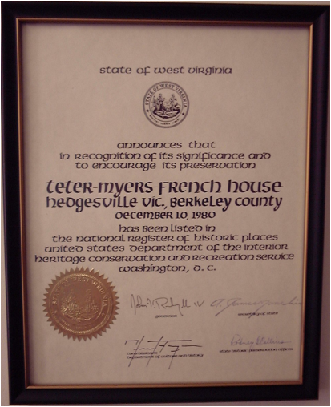
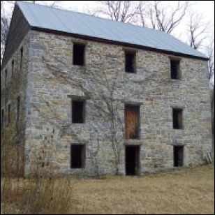

French Family Association
The Official Website of the Surname French

Berkeley County, West Virginia
Chart #208, Jacob French, 2nd
http://www.frenchfamilyassoc.com/FFA/CHARTS/Chart208/
This chart updated by Mara French on 1/6/16. Send any corrections or comments to this chart to marafrench@mindspring.com. Although this is not my line, I make additions to it, and you will be notified when your data or someone elses data is added. Revisions: 2014, 2016.
Links
Second Generation
2.3* Jacob French (2nd), b. ca. 1727 probably overseas. Jacob moved to Maryland, then Virginia (most likely West Virginia). Jacob died in Sep 1788.
Marriage
He married Magdalena Snabley/Schebley ca. 1751 who was the sister of John Snabley/Schnebley who had married Louisa French, Jacobs sister. Jacob and Magdalena m. ca. 1748.
From Biographical annals of Franklin County, Pennsylvania, Jacob Schnebele (later changed to Snively and Shively) was born in Boisenbiesen, Alsace, Switzerland 21 Dec 1694 and died 24 Aug 1766. He came to Pennsylvania with his father and settled in Lancaster County. He moved to Antrim township, Franklin County, East of Greencastle. By his first wife (name unknown) he had his first child, son John Shively who married Louisa French and moved to Frederick Co., Maryland. Jacob Schnebeles third child was Magdalene who married a Mr. French believed to be Jacob French, the brother of Louisa French who married John Shively. This could also indicate that Louisa was older than her brother Jacob because a man needed to be 21 before he could marry, and she married in 1743 whereas Jacob married ca. 1748.
From Vicki, Ref. [32]. The house built by Andrew Snively - half brother of Magdalena Snively, still stands off Grindstone Rd. at 763 Zarger Road in Antrim, Franklin Co., PA, just down the road from the Jacob French farm. The people they were close to for at least two generations were...the Eaby's, the Schnebely/Snively's, and the Reagers, all who came from Switzerland...and when it become too dangerous for Mennonites in Switzerland - perhaps all of them moved to Ibersheim, Germany (along the Rhine river about 8 miles north of Worms). From there, all of them traveled to the Port of Philadelphia.
DNA
Claude H. French took the DNA test, #15700; his lineage is Jacob (1), Jacob (2), Jacob (3), Henry (4), Jacob (5), John (6), James Hamilton (7), Howard (8), Claude Hamilton (9), Steve (10).
Children
Barbara, Mary, George, John (Chart #194), Jacob Jr., Henry. Only these sons were mentioned in Jacobs will – George and Jacob remained in WV and John and Henry moved south. Jacob d. in 1788.
Third Generation
The following census includes French ancestors from the third generation:
1810 Census of Berkeley Co., WV
Columns are headed as follows: See http://files.usgwarchives.net/wv/berkeley/census/1810/fedcens.txt.
a -- M<10 Free white
males under 10 years of age
b -- 10 - 16 " " " 10 years and under 16
c -- 16 – 26
"
"
" 16 " " " 26 including heads of families
d -- 26 – 45
"
"
" 26 " " " 45
"
" " "
e -- 45 >
"
"
" 45 " " upwards
f -- F<10 Free white females under 10
years of age
g -- 10 - 16
"
"
" 10 years and
under 16
h -- 16 – 26
"
"
" 16 " " " 26 including heads of families
i -- 26 – 45 " " " 26 " " " 45
" " " "
j -- 45 >
"
"
" 45 " " upwards
k -- Free All
other free persons except Indians not taxed.
l -- Slaves Slaves.
|
First |
Last |
Birth |
Death |
a |
b |
c |
d |
e |
f |
g |
h |
i |
j |
k |
l |
|
Jacob |
French |
Before 1765 |
1826 |
0 |
1 |
1 |
0 |
1 |
1 |
1 |
2 |
0 |
1 |
0 |
1 |
|
George |
French |
Before 1765 |
1830 |
0 |
2 |
1 |
0 |
1 |
4 |
0 |
1 |
1 |
0 |
0 |
0 |
|
Henry |
French |
After 1765 |
1821 |
1 |
0 |
1 |
1 |
0 |
1 |
0 |
1 |
0 |
0 |
0 |
0 |
|
John |
French |
Before 1765 |
1791 |
0 |
1 |
1 |
1 |
1 |
1 |
0 |
2 |
0 |
0 |
0 |
0 |
From this chart, Im determining their birth order: Jacob, George, John, Henry. Analysis:
1. Jacob, George, and John were the oldest; that is, 45 or older, born 1765 or before. Henry was 26-45; therefore, born after 1765.
2. Jacob was the only one who had a slave, and his wife was the oldest, 45 or older, born before 1765.
3. Georges wife was 26-45, or born after 1765. Henry and Johns wives were 16-26, born 1784-1794.
4. George had the largest number of people living with him, 10.
5. George and John above are not those from Greenville, SC, as they were head of household in SC in the 1810 census.
From Linda, Ref. [11]: All the French names are in the 1820
census: George, Henry, Jacob and John French. The surnames Kitchen, Pitzers, Savely, Grantham,
Millers, Myers, Lefever, Dougherty, Leopard, Bowman who are in-laws to the Frenches
all appear.
Children of Jacob French (2nd) and Magdalena Snively, 2.3
3.1 Barbara or Barbary French, b. ca. 1758, m. Martin Helm before 1790 in Delaware [105]. She died ca. 1825 as her brother Jacob French was the administrator. Her father Jacob French d. in 1788, and her brother Jacob died in 1826. Martin d. before 25 Oct 1822 when his estate was settled in Berkeley Co., VA [105]. On 19 Jun 1798, Barbara and her siblings George, Mary, and Margaret sold land to their brother Jacob French (see the Chronology section). All were of Berkeley Co., WV.
Their daughter Barbara Helm was b. 30 Sep 1789, m. Christopher McAlister on 13 Dec 1810 - this is in the Berkeley County marriage records. I think Martin Helm is listed as Martin Jellen in the 1810 census Berkeley County, VA, from Deb, Ref. [1]. Barbara Helm McAlister died on 8 Sep 1853 and is buried at the Little Georgetown Cemetery in Berkeley Co., WV. Matthias Pitser and John Pitser appear in the 1810 census of Berkeley Co., WV.
In the 1850 census of Berkeley Co., VA, Barbara is 60 and Christopher must have already died. Barbary is living with her children George McAlister, a shoemaker (age 24), Virginia McAlister (17), Philip Pitzer (age 26), and Rosiller Pitzer (age 25). In 1850, Henry C. McAllister (born ca. 1829) was living two households away with the family of his sister, Mary (McAllister) Miller, and Henry was also a "shoemaker." In the 1850 U.S. Census, Benjamin McAllister (born c.1812) lived in the 9th District of Berkeley County, and he was a "shoemaker."
From http://www.findagrave.com:
Barbara died 8 Sept 1853, at 63 years, 11 months, 8 days and was buried at the
Little Georgetown Cemetery in Verkeley Co., WV. She
was married to Christopher McAllister on 13 Dec 1810 in (now) Berkeley County,
West Virginia. The suretor for their marriage bond
was Patrick Duffy. In the 1850 U.S. Census, Barbara lived in the 9th District
of Berkeley County with her children, George McAllister (born ca. 1826) and
Virginia McAllister (born c.1833). George was a
"shoemaker." In 1850,
Henry C. McAllister (born c.1829) was living two
households away with the family of his sister, Mary (McAllister) Miller, and
Henry was also a "shoemaker." Barbara's daughter Rosella (McAllister)
Pitzer (born c.1825) and
her husband, Philip Pitzer (born ca. 1826,) were
living in Barbara's household in 1850. Rosella was married to
Philip Pitzer on 4 Dec 1849 in Berkeley County by
John Light. The suretor for their marriage
bond was Benjamin McAllister. In the 1850 U.S. Census, Benjamin McAllister
(born c.1812) lived in the 9th District of Berkeley
County, and he was a "shoemaker." They had children:
Mary M. McAllister Miller (1816-1865), m. John W. Miller on 22 May 1844
Ann Jane McAllister Fleming (1818-1854) m. Joseph Fleming on 8 May 1845
George W. McAllister (1824-1886) m. Mary C.
Barbara's daughter Rosella (McAllister) Pitzer (born c.1825) and her husband, Philip Pitzer
(born ca. 1826,) were living in Barbara's household in 1850. Rosella
was married to Philip Pitzer on 4 Dec 1849 in
Berkeley County by John Light. The suretor for
their marriage bond was Benjamin McAilister.
From website http://www.trakwest.com/zhel118.htm: "118 Martin HELM d. bef. 25 Oct 1822, when his estate was settled. m. (119) Barbara _____?, b. DE, d. 1822-1825, Berkeley Co., VA. From deeds in Berkeley Co., VA, it would appear that Martin HELM lived in Martinsburg, where he bought a lot on the corner of Spring Alley and Burke St., on 27 Jan 1778 from Adam Stephens, and where he sold a 1/4 lot to John Frank for 166 lbs. in Martinsburg. He was listed as a taxpayer in the Virginia Taxpayers in 1782-1787, with. 1 pole, 0 slaves, Berkeley Co. In the 1774-1810 tax list, he is listed as a taxpayer, in 1783 with 1 white, no slaves, 1 horse 3 cows, with a tax of 0.12.0; and on the tax list of 1792, he is listed with no acreage. In 1792, also listed on the tax list, are a John and William HELM, but no relationship to Martin HELM has been proven. Barbara HELM settled her husband's estate in Berkeley. Barbara HELM'S estate was settled in the amount of $15.66, Berkeley Co., by Jacob French, Administrator pm 13 Jan 1825. (VAB11, WVBEB10, 24, WVBE4 Bk 4 p284, 479, 5 Bk7 p398, ) Only one known child [105]:
118.1 Barbara HELM b. 30 Nov 1789 d. 8 Sep 1853.....See #58/59 (Direct Ancestor)
118.2 John HELM (Possible)
118.3 William HELM (Possible)
118.4 Margaret HELM (Possible)"
3.2 Mary J. French, b. ca. 1760, m1. Loved Reed on 15 Oct 1786 in Berkeley Co., VA. He was the son of George Reed (of Frederick Co., VA) and Sarah Whitmarsh. Loved Reed m1. Charity Phillips, m2. Mary French, with whom he had no children. Other Frenches married into the Reed family: Hannah French m. John Gurney Reed. Susan French m. William Reed.
3.3* George French, b. 1750. He acquired his fathers 200-acre plantation in 1785 with his brother Jacob. He had no slaves. He d. in 1830 in Berkeley Co., WV. On 19 Jun 1798, George and his siblings Mary, Barbara, and Margaret sold land to their brother Jacob French (see the Chronology section). All were of Berkeley Co., WV. In 1835 John French of the 4th Gen. (son of Jacob (3rd), brought suit against George Wolff, administrator of George French, deceased in 1830, who had lived on a 385-acre tract on Back Creek in the Jones Spring area. This George French was a brother to Jacob French (3rd). John of the 4th Gen. died 2 years later.
Marriage
He m. Mary Molly Saveley (later reverted back to Snively) on 10 Oct 1789 in Berkeley Co., WV according to Don Wood. Mary was b. ca. 1769 in Hagerstown, Washington Co., MD. She was the daughter of Frederick Savely (1742-1808) and Catherine (1743-1815), both who died in Martinsburg, Berkeley Co., WV. The only Savely in the 1810 census of Berkeley Co., WV, is Charlette Savely, who lives next door to George French, but ancestry.com has French indexed as Franck.
The name Schnavely is a German name and that family (Henry Schnavely) lived in Lancaster Co., PA. The derivative Schavely could have been Schively or Shively. Many more listings show the name spelled Snavely and Schnebly in Lower Antietam, Washington Co., MD, and Schnebly from Hagerstown, Washington Co., MD, and Schnebly from Conocoheague, Washington Co., MD. Jacob Shiveley of Frederick Co., VA, is in this same 1810 census, with 6 slaves and he and his wife, both 26-44; he is not living next to any familiar surname of the French family.
Census Records
1810 Berkeley Co, VA (now WV) Federal Census, George was living with his wife and 8 children:
Males 10-15 2
– sons born 1794-1800 – Jacob and Henry
Males 16-25 1
– sons born 1786-1794 -- John
Males over 45 1
– George, therefore born
before 1765, b. ca. 1750
Females less than 10 4
– dau. born 1800-1810 – Barbara, Margaret, Mary, and Christina
Females 16-26 1
– dau. born 1786-1794
-- Catherine
Females 26-45 1
– Mary born after 1765, b.
1769
1820 census of Middletown, Berkeley Co., VA, George was living with his wife and 7 children:
1 free white male under 10 (son born 1810-1820)
– unk son
2 free white males 16-25 (son born 1795-1804) – Jacob and Henry
1 free white male 26-44 (son born 1776-1795) -- John
1 free white male 45 and over (George,
born before 1776, b. 1750)
2 free white females 10-15 (dau. born 1805-1810)
2 free white females 16-25 (dau. born 1795-1804)
1 free white female 45 and over (Molly
Saveley French, born before 1775)
1830 census of
Berkeley, VA, listed as George, perhaps living with:
2 males, 10-14, b. 1816-1820, children
1 male
15-19, b. 1811-1815, children
1 male
80-89, b. 1741-1750, George, b. 1750
1 female
15-19, b. 1811-1815, children
4 females
20-29, b. 1801-1810, children
1 female
60-69, b. 1761-1770, Molly Saveley French, b. 1769, m. 1789
Death
George d. just after the 1830 census of Berkeley, VA, when he was 80-89 years old. George was listed in the will of his father, Jacob French (2nd), in 1788, along with siblings Capt. Jacob French, Henry, John, and sisters. No mention of a Samuel.
Land Deeds
Regarding the land that George owned: Linda French Dawson analyzed the situation to interpret that the person who made the application was George French and that his father, Jacob French (2nd), owned the property since 1769. It seems that an application by George French was in the works in 1775 and 1776 but not granted until 1790 because of the Revolutionary War. We know he had to be 21 in 1775 (born in 1754 or before). So Jacob French (1st) had to be born in 1733 or before.
George French was therefore born in 1748 or before. Jacob French (1st) died in 1755, so he was probably Jacob French (2nd).
Family History Library film # 0831282 Berkeley Co. Court records [This was two years before Morgan Co. separated from Berkeley, but I believe North Mountain stayed in Berkeley Co.]: "Frederick Householder is appointed overseer of the road from the top of the North Mountain at Boyds Gap to back creek near Minghini Mill. Ordered that the tithables on the land of Joseph Minghini, George French, Henry Miller (the husband of George Frenchs daughter Mary), Frederick Householder & Thomas Foster's heirs do work thereon under him." "Thomas Sharp(?) is appointed overseer of the road from Mill creek near Frederick Householders dwelling house to the meeting house at ganoe town........."
On 19 Jun 1798 George and his wife Mary, Barbara Helm, Michael Miller and Mary his wife, Henry Miller and Margaret his wife, all of Berkeley County, sold to Jacob French (2nd) two tracts of land adjoining each other: 220 acres, land which Jacob French (1st), now deceased, had purchased from Edward Davis and James Davis. Jacob French (2nd) also purchased the following 2 tracts of land; the house is located on the 220 acres from Jacob French (1st) heirs.
1. 16 Apr 1803 Adam Gilliland and Sarah, his wife, of Shelby Co., KY, James Davis and Ruth, his wife, George Groves and Drusilla, his wife, Alexander Cochron and Mary, his wife, John Davis, Jacob Davis, and Anna Davis heirs of John Davis, dec. and Ellizabeth Davis, widow of Berkeley Co., WV, sold for $1,898.00 to Jacob French (2nd) 94 acres 1 rodd 18 poles land on the west side of Tullis Branch where John Davis died, along George Newkirk, John Turner, and Jacob French.
2. 11 Nov 1807 Jacob Davis and Elizabeth, his wife of Washington Co., Kentucky sold for $370.00 to Jacob French of Berkeley County 3 acres granted to Jaccob Davis by patent 18 May 1805. Line ran along the corner of James Davis to John Davis. 340 acre patent to the heirs of the late John Ellis, dec.
3.4* Jacob French (3rd), b. ca. 1750 in Berkeley Co., VA, according to the 1810 census. Jacob acquired his fathers 200-acre plantation in 1785 with brother George. Jacob lived in Berkeley Co., WV in the 1810 census. Jacob was one of the early settlers in Berkeley County. In 1773, he built a log cabin, which was still being used in 1884 [5]. Jacob was listed in the will of his father, Jacob French 2nd, in 1788, along with siblings George French, Henry, John, and sisters. Jacob wrote his will dated 4 May 1824, proved 8 May 1826. Jacob d. 6 Apr 1826. He served as a Captain in the military.
Marriage
He m. Catherine Pitzer, ca. 1780, daughter of Michael Pitzer and Sophia Charlotte Bashore (or Sophia Scharlotta Boshaar). They had 6 children. Catherine Pitzer French was b. 30 Jan 1759, and d. 25 Aug 1850 in Little River, Montgomery Co., VA.
DNA
Claude H. French took the DNA test, #15700; his lineage is Jacob (1), Jacob (2), Jacob (3), Henry (4), Jacob (5), John (6), James Hamilton (7), Howard (8), Claude Hamilton (9), Steve (10).
Census Records
In the 1810 census of Berkeley Co., VA, Jacob (listed as Franck), 8 family members total plus 1 slave:
1 free white male under 10-16, b. 1794-1800, Jacob b. 1796
1 free white males 16-25, b. 1785-1794, Henry,
b. 1785
1 free white male 45 and over – Capt.
Jacob born 1765 or before
1 free white female under 10, b. 1800-1810, Rachel, b. 1800
1 free white female 10-16, b. 1794-1800, Elizabeth, b. 1796, Mary,
b. 1798
2 free white females 16-25, b. 1785-1794, Hannah b. 1794
1 free white female 45 and over – wife Catherine born 1765 or before, b. 1759
1 slave
Daughter Barbary not living
at home because she was married to Michael Lepard in
1806
In the 1820 census of Middletown, Berkeley Co., VA, Jacob, 9 family members total, plus 4 slaves. This Jacob is the only Jacob in the 1820 census of Berkeley Co., VA. He d. shortly afterwards in 1826, He is probably living with his children and grandchildren.
2 free white male under 10
1 free white males 16-25
1 free white male 45 and over – Jacob born 1775 or before
1 free white female under 10
3 free white females 16-25
1 free white female 45 and over – wife born 1775 or before
2 slave males under 14
1 slave male 26-44
1 slave female 14-25
Death
He d. 8 Apr 1826 in Berkeley Co., WV, and is therefore not in the 1830 census. His wife d. there after 1841; Catherine Pitzer French was b. 30 Jan 1759, and d. 25 Aug 1850 in Little River, Montgomery Co., VA. Jacob wrote a will in 1826 as Jacob French of Berkeley Co., VA, filed in Frederick Co., Index Number 1828-027-SC, plaintiff was John French, defendant was the widow of Jacob French, also mentioned are surnames Colston, Harrison, Howke (Houck), Jordan, and Lepard. See http://www.lva.virginia.gov/chancery/case_detail.asp?CFN=069-1828-042. Jacobs widow was Catherine Pitzer French, b. 30 Jan 1759, and d. 25 Aug 1850 in Little River, Montgomery Co., VA.
A female was living in the Armistead Colston family in Frederick Co., VA, b. ca. 1770-1780, plus a male 20-29 (b. 1800-1810) and a female 15-19 (b. 1811-1815), plus 11 slaves. We can only assume that the young female married Armistead Colston and that a woman was living with them, b. ca. 1770-1780. Armistead Colston is listed in Shenandoah Valley Pioneers and Their Descendants, p. 455.
Jacob French left 62 acres to son Henry French, land adjoining land that Henry French owned. To daughter Mary he left $1,000, to daughter Barbary $900.00, to daughter Rachel $900.00, to daughter Elizabeth $500.00, to daughter Hannah $900.00, to his wife (Catherine) all household and kitchen furniture, beds and bedding and such cattle as she may choose to keep and at any time she may want a horse creature she is to be furnished with one, to my son John French all the land I now live on – and all the money Bonds notes and accounts and all the Blacks that is now on hand. John to be Executor. Will dated 4 May 1824, proved 8 May 1826.
In 1826 Catherine, the widow of Jacob French (3rd), refused to accept the provision made for her by her deceased husband in his will and asked the court to lay off a dower land for her. Jacob French owned a home farm of 314 acres. Catherine was awarded 101 ½ acres of the home farm on Tullis Branch. Two years later in 1828 part of the brothers and sisters brought suit against John French, administrator of Jacobs will, claiming he had not turned in all the profits from the crops on the land of their fathers home place and adjoining crops on Mr. Stephens farm; that there had been agreements that John French was only to receive part of the crops that Jacob French had, $6,000.00 in cash and $2,000.00 in securities and bark stocks plus other valuable land besides the 314 acre farm. In 1837 the Court divided a 296 acre 1 rood 6 pole tract of land between the heirs of Jacob who were Mary French, Henry French, Elizabeth Harrison, Hannah Pitzer formerly the widow of William Jordan, Michael Lepart and wife, and Henry Houke and wife and John French who received 44 acres. The land lies near the center of what is now known as Marlowe. There was only one house on this land at the time it was divided, but in a few years others were built on the divided tracts. This appears to be the beginning of the village of Marlowe.
The FFA would assume that all living daughters were mentioned, plus all sons. Four married daughters are mentioned (one daughter was not yet married). All their husbands lived in Frederick Co., VA, in the 1830 census, after Jacob's death.
Barbary, b. 1785-1794, m. Michael Lepard
on 16 Aug 1806
Hannah, m. William Jordan on 22 Jan 1813
Mary, b. 17 Jun 1798, m. Robert Proctor on 23 Mar 1831
Rachel, m. Henry Houck on 23 Apr 1812
Elizabeth, m. George D. Harrison.
Henry, b. 1776-1784, m. Molly LeFevre
John, b. 1796, m. Sarah Myers
3.5 John French, b. ca. 1750, m. Catherine (most likely Hedges). See FFA Chart #194. Later he moved to KY where he died in 1791. Most likely his children were James, George Hedges, Elizabeth, and Samuel. John was listed in the will of his father, Jacob French 2nd, in 1788, along with siblings Capt. Jacob French, Henry, John, and sisters. No mention of a Samuel. John removed to Kentucky before 1788 when his father died and was not in the census records of Berkeley Co., WV past that date.
3.6 Henry French, b. 12 Mar 1755. Henry French continues with FFA Chart #31. Henrys father Jacob bought the land on the Tullis Run from James Davis, and he bought some from his brother Edward Davis. Soon after the last battle of the Revolution - Blue Licks, KY, - Edward Davis and his wife and James Davis and his wife moved to KY with a large group - 500 - people. Edward Davis bought land from Henry French and his wife Elizabeth. Henry fought in the Battle of Blue Licks [32]. Henry was listed in the will of his father, Jacob French, in 1788, along with siblings Capt. Jacob French, George W., John, and sisters. No mention of a Samuel. Henry is no longer mentioned in census records of Berkeley Co., VA, or in Maryland as he removed to Mercer Co., KY, in 1773. (Ancestor of Vicki, Ref. [32] ). Jacob's son Henry married Elizabeth Earsom about 1770. Her father "Simon Ersame" came to America on the ship with Ludwig Frantz - the Townsend – on 5 Oct 1737.
3.7 Margaret French, m. Henry Miller, brother to Michael Miller whom her sister Mary married. This marriage was noted in a land contract on 19 Jun 1798 (see Chronology section). On 19 Jun 1798, Margaret and her siblings George, Barbara, and Mary sold land to their brother Jacob French (see the Chronology section). All were of Berkeley Co., WV. Did Margaret possibly die before the 1810 census?
Henry Miller appears in the 1810 census of Berkeley Co., WV.
2 males under 10
1 male 16-25, b. 1785-1794
2 males 26-44, b. 1766-1784, Henry Miller
1 male over 45, most likely Henry Miller s father
1 female 10-15, b. 1795-1800
1 female 16-25, b. 1785-1794
Fourth Generation
1830 Census of Berkeley Co., WV

George 0 0 2 1 0 0 0 0 0 0 1 0 0 0 0 0 1 4 0 0 0 1 0 0 0 0
Jacob 2 2 1 0 0 1 0 0 0 0 0 0 0 0 0 0 0 1 0 0 0 0 0 0 0 0
John 2 0 0 0 0 1 0 0 0 0 0 0 0 0 0 1 0 1 0 0 0 0 0 0 0 0
Henry 0 0 2 0 1 0 1 0 0 1 0 0 0 2 2 0 0 1 0 1 0 0 0 0 0 0
From the census above, we see that, even though these names are the same as the ones in the third generation, they are not all from that generation as the oldest males have different ages. This is assuming all family members are related within the same family with no servants.
1750-1770 start third generation
1790-1800 start fourth generation
1810-1830 start fifth generation
George French is
the oldest, age 80-90, b. 1740-1750 (third generation), b. 1750 or before, m. 1789
Georges wife is age 60-70, b. 1760-1770 (third generation), b. 1769, m. 1789.
George has 8 children living with him, b. 1800-1820. Georges wife was quite
young.
Henry French (son
of Capt. Jacob French), and his wife are age 40-50 (fourth generation),
b. 1780-1790 and living with their 8 children, ages 0-30 (fifth generation), b.
1800-1830
and living with a man aged 70-80, b. 1750-1760 (third generation), probably a
widower, perhaps Henrys wifes father, as Henrys father had already died.
Jacob French is
30-40 (son of Capt. Jacob French), b. 1790-1800, his wife is 20-30,
(fourth generation), b. 1800-1810
They have 5 children, all daughters, ages 0-15, (fifth
generation), b. 1815-1830
John French is
30-40 (son of Capt. Jacob French), b. 1790-1800, his wife is 20-30,
(fourth generation), b. 1800-1810
They have 3 children, ages 0-15, b. 1815-1830, (fifth
generation)
Children of George and Mary (Savely) French, 3.3
The surname Savely was changed from Snively about this time, but then changed back to Snively during the next generation.
Census Records
1810 Berkeley Co, VA (now WV) Federal Census, George was living with his wife and 8 children:
Males 10-15 2
– sons born 1794-1800 – Jacob and Henry
Males 16-25 1
– sons born 1786-1794 -- John
Males over 45 1
– George, therefore born
before 1765, b. ca. 1750
Females less than 10 4
– dau. born 1800-1810
– Barbara, Margaret, Mary, and Christina
Females 16-26 1
– dau. born 1786-1794
-- Catherine
Females 26-45 1
– Mary born after 1765, b.
1769
1820 census of Middletown, Berkeley Co., VA, George was living with his wife and 7 children:
1 free white male under 10 (son born 1810-1820)
2 free white males 16-25 (son born 1795-1804)
1 free white male 26-44 (son born 1776-1795) – unknown adult
1 free white male 45 and over (George,
born before 1776, b. 1750)
2 free white females 10-15 (dau. born 1805-1810)
2 free white females 16-25 (dau. born 1795-1804)
1 free white female 45 and over (Molly
Saveley French, born before 1775)
1830 census of
Berkeley, VA, listed as George, perhaps living with:
2 males, 10-14, b. 1816-1820, children
1 male
15-19, b. 1811-1815, children
1 male
80-89, b. 1741-1750, George, b. 1750
1 female
15-19, b. 1811-1815, children
4 females
20-29, b. 1801-1810, children
1 female 60-69,
b. 1761-1770, Molly Saveley French, b. 1769, m. 1789
Summary: 12
children
son b. 1786-1794, out in 1830, result same
dau b. 1786-1794, out in 1830, result same
son b. 1794-1800, out in 1830, +son 1795-1804, result son 1795-1800
son b. 1794-1800, out in 1830, +son 1795-1804, result son 1795-1800
dau b. 1800-1810, -dau
1801-1810, +dau 1795-1804, result 1801-1804
dau b. 1800-1810, -dau
1801-1810, +dau 1795-1804, result 1801-1804
dau b. 1800-1810, -dau
1801-1810, +dau 1805-1810, result 1805-1810
dau b. 1800-1810, -dau
1801-1810, +dau 1805-1810, result 1805-1810
-dau b. 1811-1815, +son 1810-1820, result 1811-1815
-son b. 1811-1815
-son b. 1816-1820
-son b. 1816-1820
4.1 Catherine French, b. ca. 1791 because her parents married in 1789. Catherine m. Samuel Donaldson (Donelson or Donalson or Donnelson), probably before 1810 as they are listed in the 1810 census in Berkeley Co., WV. They both died before 1835. They had children Eliza Ann, Williamson, James, and George Donaldson.
Another record shows Catherine French married Hugh Donaldson, and that both were born in 1794 in PA. In the 1850 census they are listed living in Freeport, Armstrong Co., PA with 4 children: William H., Hiram, Robert, and Samuel Donaldson. In the 1860 census they are living in the same place.
Census Records
In the 1810 census of Berkeley Co., WV, Samuel Donaldson is aged 26-44, and his wife Catherine French is listed as b. 1785-1794; she was the daughter of George French and Mary Saveley from the 4th generation. William (Wm) Grantham is living next door. William Granthams daughter Maria Grantham married George French of the 5th generation.
Samuel Donaldson:
1 male 16-25, Samuel Donaldson Jr., b. 1785-1794
1 male 26-44, Samuel Donaldson Sr., b. ca. 1766-1784
1 male 45+, parent?
2 females less than 10, b. 1800-1810, children of Samuel Donaldson and
Catherine French
1 female 16-25, wife of Jr., Catherine
French, b. 1785-1794, most likely 1791
1 females 26-44, wife of Sr., b. ca. 1766-1784
William Grantham:
1 male under 10, b. 1800-1810
2 males 10-15, b. 1795-1800
1 male 16-25, b. 1785-1794
1 male 26-44, b. 1766-1784, William Grantham, b. Oct 1767 in Berkeley Co., WV.
3 females under 10, b. 1800-1810, Maria
Grantham who m. George French
1 female 16-25, b. 1785-1794
1 female 26-44, b. 1766-1784, his wife
1 slave
Samuel Donaldson appears in the 1820 census of Middletown, Berkeley Co., VA, with a family of 2; he is over 45 (born before 1775), and Catherine is between 26 and 44 years old; therefore she was born 1776-1794. Also listed in this census on Page 4 is Henry Savely, William Grantham, Samuel Hedge, and Henry Kitchen, whose surnames are connected to the French surname. George French is listed on Page 3. Also listed on Page 3 is Jacob Myers. On Page 5 is Henry French, Jacob Miller, and Henry Miller. On Page 6 is Jacob French.
By the 1830 census, Samuel would be ca. 40 years old. The only logical one that appears in Berkeley Co., VA, is Thomas Donaldson with a family of 9.
4.2 John French, d. before 1835. He could be the John Aaron French who m. Hannah Cline on 19 Jan 1818.
4.3* Henry French, b. between 1780-1790 per the 1830 census. This Henry could have just as well been the son of Jacob French, Henrys brother. Not sure if this Henry is the son of George or his brother Jacob, in other words, should this be 4.2 or 4.10?
Census Records
1820 census of Middletown, Berkeley Co., VA.
2 males under 10
1 male 10-15
1 male 26-44, Henry, b. 1776-1794
2 females under 10
1 female 10-15
1 female 16-25
1 female 26-44, his wife
1830 Census of Berkeley Co., WV. Note: 4.2 could be 4.10.
Males listed first:
Henry 0 0 2 0 1 0 1 0 0 1 0 0 0 2 2 0 0 1 0 1 0 0 0 0 0 0
Henry is living with a man aged 70-80, b. 1750-1760
(third generation), probably a widower, perhaps Henrys wifes father.
Henry and his wife are age 40-50 (fourth generation), b. 1780-1790
and their 8 children, ages 0-30 (fifth generation), b. 1800-1830
4.4 Jacob French, b. 1794-1800.
4.5 George French, b. 1794-1800, m. Maria Grantham on 15 Apr 1830, as they named their daughter Maria. Linda (Noland) Layman writes that she found a book The Berkeley Journal, Back Creek Valley, Part I Issue 21, published 1996, that Maria Grantham married George French on 15 Apr 1830 and they had two children: Susan and Maria who married a man named Speece. The lived on Back Creek in Berkeley Co., WV. However, there was a Maria French who m. Lewis Spiece on 8 Apr 1852 in Carroll Co., IN. A George French appears in the 1860 census of Martinsburg, Berkeley Co., WV.
4.6 Christina French, b. 1810-1810.
4.7 Barbary French, b. 1800-1810.
4.8 Mary French, b. ca. 1785-1794, m. Henry Miller on 22 Apr 1835. Unsure. More research needed.
Children of Capt. Jacob French (3rd) and Catherine Pitzer, 3.4
4.9* Henry French, b. 1776-1784 in Berkeley Co., WV and d. there in 1840-42. He m. Mary "Molly" Lefevre in 1806 [19], dau. of David LeFevre and Mary Zeller), and she was born in 1785 in Washington Co., MD. David Lefever also had a daughter named Elisabeth, and ancestry.com shows her born on 8 Dec 1799 and christening on 8 Sep 1800 at Saint Johns Evangelical Lutheran Church in Hagerstown, Washington Co., MD, probably where Molly was christened. Henry inherited 62 acres of land in his fathers will of 1826; the land was adjacent to his fathers land. He was also granted more in 1837 (see his fathers will above).
DNA
Claude H. French took the DNA test, #15700; his lineage is Jacob (1), Jacob (2), Jacob (3), Henry (4), Jacob (5), John (6), James Hamilton (7), Howard (8), Claude Hamilton (9), Steve (10).
Census Records
They lived in Berkeley Co., WV in the 1810 census; they had 3 youngsters living with them. He had no slaves. His wife was born after 1784 according to the 1810 census. The 1850 census shows that she was born in 1785.
In the 1810 census of Middletown, Berkeley Co., VA, shows Henry with 3 children, b. 1785-1810:
1 free white males under 10, b. 1800-1810,
1 free white males 16-25, b. 1785-1804,
1 free white males 26-45 – Henry, b. 1765-1784 (b. 1776-1784)
1 free white female under 10, b. 1800-1810,
1 free white females 16-25 – wife, Mary Lefevre,
b. 1785
In the 1820 census of Middletown, Berkeley Co., VA, shows Henry with 7 children:
2 free white male under 10 (born after 1810)
1 free white males 10-15 (born between 1805-1810)
1 free white male 26-44 (Henry would have been born 1776-1784)
2 free white females under 10 (born after 1810)
1 free white females 10-15 (born between 1805-1810)
1 free white females 16-25 (born between 1795-1804)
1 free white female 26-44 (Mary would have been born 1776-1794) = she was b. in
1785
1830 Census of Berkeley Co.,
WV. Note: 4.10 could be 4.2. Here Henry
is living with a male 70-80 years old or born 1750-1760, but he is not his
father as his father Jacob d. in 1826; perhaps it is his wife Mollys father
David LeFevre.

Males listed first:
Henry 0 0 2 0 1 0 1 0 0 1 0 0 0 2 2 0 0 1 0 1 0 0 0 0 0 0
Henry French, son
of Capt. Jacob French, and his wife are age 40-50 (fourth generation),
b. 1780-1790 and living with their 8 children, ages 0-30 (fifth generation), b.
1800-1830
and living with a man aged 70-80, b. 1750-1760 (third generation), probably a
widower, perhaps Henrys wifes father, as Henrys father had already died.
Dau b. 1800-1810, Nancy,
1804
Son b. 1800-1810, Jacob, b. 1805
Son b. 1815-1820, George, b. 1807
Son b. 1815-1820, Henry, b. 1812, John 1814
Dau b. 1820-1825, Kesiah
1810 twin
Dau b. 1820-1825, Barbara 1810 twin
Dau b. 1825-1830, Mary 1823
Dau b. 1825-1830, Margaret 1831
1850 -- Mary is living with her son Jacob M. French in the 1850 census of Urbana, Champaign Co., OH.
1860 -- Mary Lefever shows up in the 1860 census of Deerfield, Warren Co., OH, as age 77, b. 1783 in Maryland, living with her dau. Sarah Caulson and husband Milton Caulson with their 7 children. She also shows up in Deerfield, Warren Co., OH, living with the Boxter family, perhaps her daughter, Mary Boxter b. ca. 1806, and husband James Boxter, b. ca. 1798. She must have been living in both places and was counted twice.
1870 -- Mary Lefevre shows up in the 1870 census of Deerfield, Warren Co., OH, as b. 1784 in Maryland, age 86, widowed, and living with the Colston family. The Colston family is mentioned in the will of Henry Frenchs father, Jacob, in 1826.
1880 – Mary Lefevre shows up in the 1880 census in Oxford, Butler Co., OH, as born in 1785 in Maryland, age 95, widowed, listed as mother of the head of household who was Sarah L. Coltson or Colston, living also with Coltson children Mary, Mesinna, and Corinna.
The FFA believes Sarah Colston was connected with Jacobs son Henry. She was b. 1817, m. Milton Caulson or Colton or Colston. Mary Lefever (perhaps Jacob Frenchs wife) shows up in the 1860 census of Deerfield, Warren Co., OH, as age 77, b. 1783 in Maryland, living with her dau. Sarah Caulson and husband Milton Caulson with their 7 children. She also shows up in Deerfield, Warren Co., OH, living with the Boxter family, perhaps her daughter, Mary, b. ca. 1806, and husband James Boxter, b. ca. 1798. She must have been living in both places and was counted twice. The name Mary Lefever is listed and not Mary French.
4.10 Barbary French, b. 1785-1790, d. 14 Feb 1842. She inherited $900 in her fathers will of 1826 and land in 1837 (see her fathers will above). Apparently Barbary had died before 1837 as her fathers land was given to Michael Lepart and his wife, unless the land division agreement had meant Barbary, but her name was not mentioned whereas the other siblings names were mentioned. Barbary d. 1842. The West Virginia Estate Settlements, 1815-1850 show Barbara Leopards will: LEOPARD, BARB., Will, 2-14-1842. Dev.: John, Geo., Adam, sons; Mary, Nancy Lechron, Cath., dau. Her husband, Michael, predeceased her and is not in the 1840 census of Berkeley Co., VA. Living next door to Barbara in the 1840 census as head of household are the families of Jacob French, b. ca. 1810-1820 and Sarah French, b. ca. 1790-1810 in separate households. Sarah was most likely Sarah Myers French, b. 1803, the wife of John French, 4.12, and brother of Barbara, as John had died in 1837. Who was Jacob?
Jacob French 3 0 0 0 1 0 0 0 0 0 0 0 0 0 0 0 0 1 0 0 Jacob and wife aged 20-30
Sarah French 1 2 0 0 1 0 0 0 0 0 0 0 0 0 0 1 0 0 1 1 two females 30-50
Marriage
Barbary m. Michael Lepart
or Lephart or Lephard or
Leopard or Lepperd on 16 Aug 1806 in Berkeley Co., WV
with her father Jacob French as the suretor [76].
Census Records
Michael Lephart is listed as Michael Leopard or Michael Copass in the 1810 census of Berkeley Co., VA, where a female is listed aged 16-25; therefore, b. 1785-1794. The surname Lephart is a German name found in Pennsylvania.
1820 census
of Middletown, Berkeley Co., VA, Barbara and Michael Leopard have a family of
8:
2 males under 10
1 male 10-15
1 male over 45, b. 1775 or before, Michael
3 females under 10
1 female 26-44, b. 1776-1794, Barbary
1840 census
of Berkeley Co., VA:
1 male 5-9
2 males 15-19
1 female 20-29
1 female 50-59. Barbara, therefore born 1781-1790.
4.11 Hannah French, b. 14 Dec 1793 in Berkeley Co., WV, d. 12 Feb 1873 and is buried at Harmony Cemetery, Berkeley Co., WV. She inherited $900 in her fathers will of 1826.
Marriage
Hannah m1. William Jordan on 22 Jan 1813 in Washington Co., MD. William Jordan is listed in his father-in-laws will of 1826; however, they divorced and Hannah m2. William S. Pitzer on 26 Sep 1833 in Berkeley Co., WV. There were more marriages involved on all sides.
William Jordan was b. ca. 1790-1795 in Maryland. In the 1850 census of Carroll Co., Maryland, he was living with his children by Hannah French, Margaret B. Jordan and James Jordan, but not with Hannah, as she was then married to William S. Pitzer. Also in the household are 3 younger Jordan children/grandchildren: Mariah E., 10; Martha A., 9; and Thomas P., 5. Apparently James Jordan moved back and forth between parents.
William S. Pitzer was b. 12 Mar 1790 in Berkeley Co., VA. He was married first to Nancy Leighner on 29 Apr 1817 in Berkeley Co., VA, and they had daughter Hannah, b. 1823. In the 1830 census of Berkeley Co., VA, William was 40-49 and Nancy was 30-39. His father, Matthias Pitzer, was b. 24 Feb 1730/31 in Tailfingen, Baden-Wuerttemberg, Germany. William d. 29 Nov 1864 in Berkeley Co., VA. Matthias Pitser and John Pitser appear in the 1810 census of Berkeley Co., WV.
Census Records
In the 1850 census of Berkeley Co., WV, William Pitzer is living with his children, step-children, and grandson: Hannah Pitzer (27), Margaret C. Pitzer (14), John W. Jordan (32), and James Jordan (4).
Hannah and William Pitzer are listed in the 1860 census of Berkeley Co., VA, living with James Jordan (15, b. ca. 1845 in VA), and Ellen Basore (12, b. ca. 1848 in VA). It states that she was 65 years old, b. ca. 1795, and William S. Pitzer was 74, b. ca. 1786. In the 1870 census of Falling Waters, Berkeley Co., WV, Hannah is 76 or b. 1794 in WV.
Ellen Basore is listed in the 1850 census of Berkeley Co., VA, as the dau. of Samuel (b. 1817 in VA) and Catharine Basore (b. 1817 in MD). They also had children George O., Mary J., and Jacob Basore; perhaps these children were orphaned as Samuel and Catharine do not appear in the 1860 census. Note that the name Bashore (or Brasheres or Brashears) is found in the Snively family and in FFA Chart #193, also part of DNA Test Group 4. David French, b. ca. 1765, m. Margaret Snively/Shively who was the dau. of Christian Shively and Mary Bashore. Also, Henry French of FFA Chart #31 and DNA Test Gp 4 was in a public meeting held in 1779 in Kentucky with a man named Marsham Brashears.
In the 1870 census of Berkeley Co., WV, Hannah Pitzer was 76 years old, b. ca. 1794, living with the Barnes family (Margaret C. Pitzer Barnes was her daughter). She died 3 years later.
4.12* John French, b. 22 Sep 1796 in VA, d. in 1837 at age 41. John inherited all his fathers will, bond notes, all blacks, and he was the executor for his fathers will of 1826. In 1835 John brought suit against George Wolff, administrator of George French, deceased who had lived on a 385-acre tract on Back Creek in the Jones Spring area. This George French was a brother to Jacob French (2nd). John died 2 years later.
Marriage
John m. Sarah Myers on 11 Nov 1822 in Berkeley Co., WV [6] with Teter Meyers as the suretor [76]. She was b. in 1803 and d. in 1866 at age 63 [5], the dau. of Teter Myers Sr. (1751-1838) and Margaret Beare (1756-1818); hence, several descendants of this French family have the name Teter. The usgw archives show Johns middle name as Aaron.
1830 Census of Berkeley Co., WV
Males listed first:
John 2 0 0 0 0 1 0 0 0 0 0 0 0 0 0 1 0 1 0 0 0 0 0 0 0 0
John is 30-40, b. 1790-1800, his wife is 20-30, (fourth generation), b. 1800-1810. They have 2 sons, b. 1825-1830 and 1 daughter, b. 1815-1830, (fifth generation).
1850 census of Berkeley Co., VA, Sarah appears with her children and without John as he had died in 1837, and states she is 49 and living with her children Jacob (24), John (21), Peter (18), Mary Peck (6), Elizabeth Myers (52), and Cromwell Myers (15).
1860 census of Berkeley Co., VA, Sarah is 57 and living with her children Jacob M. (33), Mary (24), and granddaughter Sarah French (1), and Lewis Dugan (15).
In 1835, only 9 years after his father died, John who was the executor of his fathers will, brought suilt against George Wolff, administrator of George French, deceased. George French lived on a 385-acre tract on Back Creek in the Jones Spring area. This George French was a brother to Johns father Jacob; in other words, Johns uncle. John French had died by 1840. In 1841 Silas Harlan had qualified as administrator of John Frenchs estate. Peter N. Cookus, administrator of Catharine French, dec., widow of Jacob French (3rd), brought suit against Silas Harlen, administrator of John French, dec., and the heirs of said John French. John Strother was appointed guardian for the infant descendants of John who were Jacob M., John (2nd), and Teter M. French. It was claimed that John French, as administrator of Jacob Frenchs estate, still owed money to the estate of Jacob French (3rd). The court ordered that the 44 acres John French heirs owned on the Williamsport Road should be sold plus a lot of about 40 acres north of the Little Georgetown. John Frenchs widow was still living at this time. The 44 acres were sold to Hillery Helbert and the 40 acres to James M. Newkirk in 1845.
4.13 Elizabeth French, b. 1796 in VA according to the 1810 census. She inherited $500 in her fathers will of 1826 and land in 1837 (see fathers will above). She m. George D. Harrison prior to 1837. Elizabeth Harrison is listed in the 1860 census of Winchester, Frederick Co., VA, age 64, b. 1796, married to George D. Harrison, age 69, b. 1792 in Maryland. He d. 17 Jul 1860 in Winchester. The 1850 census states that Elizabeth was b. 1796. She and George are living with their children in Frederick Co., VA: Mary D. (22), Sarah C. (20), Elkanah (14).
4.14 Mary French, b. 17 Jun 1798 in Maryland, between 1784-1794 according to the 1810 census. Other researchers say she was b. 1806. She married after her fathers will of 1824; therefore, she is listed as Mary French in her fathers will in which she inherited $1,000, perhaps because she was not yet married. In 1837 she received more land (see her fathers will above).
She m. Robert S. Proctor on 23 Mar 1831 (after the death of her father) with her older brother, John French, as the suretor [76]. Robert was b. ca. 1792 in Maryland. Mary d. 5 Jun 1881 and is buried at Fork United Methodist Church Cemetery in Fork, Baltimore Co., MD. Robert was b. 3 Jan 1792 and d. 22 Jan 1883 and is buried at the same cemetery. Note: I never found a record giving Marys name as French, and noting that she was born in Maryland, this may be the incorrect person.
Robert was b. 1793 in Maryland. Mary states that both her parents were born in Maryland. They had 4 daughters, listed in the 1880 census of Baltimore, Maryland as Rebecca (55), Caroline (52), Harriet (44), and Amanda (42), all single. They had other children Ellen, Francis, and Joshua earlier.
Don C. Woods states that Mary m1. Michael Miller who died in 1816, but that they had children John, Catherine, Jacob, and Mary, but the dates of these children are so far off that it could not possibly be correct.
In the 1850 census of Harford, Maryland, Robert is 57, Mary is 57, and they are living with their children: Rebecca (25), Caroline (23), Ellin (21), Frances (19), Joshua (16), Harriet (14), and Amanda (12). In the 1870 census of Baltimore, Maryland, Mary was 72 and Robert was 78, living with their children Rebecca (45), Caroline (43), Harriet (34), and Amanda (32). In the 1880 census of Baltimore, Robert was 87 and Mary was 82, living with their children Rebecca (55), Caroline (52), Harriet (44), and Amanda (42).
4.15 Rachel French, b. ca. 1794, b. between 1794-1800 according to the 1810 census. She inherited $900 in her fathers will of 1826 and land in 1837 (see fathers will above). Apparently Rachel had died before 1837 as her fathers land was given to Henry Houck and his wife, unless the land division agreement had meant Rachel, but her name was not mentioned whereas the other siblings names were mentioned. She m. Henry Hout or Houck on 23 Apr 1812 with Henry Job as the suretor [76].
Fifth Generation
Children of Henry and Mary (Lefevre) French, 4.9
5.1 George M. French, b. ca. 1807 in Middletown, Berkeley Co., VA. He is in the 1810 and 1820 census records living with his parents. He is listed in the 1860 census of Martinsburg, Berkeley Co., WV. George may be the George French in the 1830 census of Berkeley Co., VA, as follows:
Census Records
1860 census of
Martinsburg, Berkeley Co., VA
Henry A. Miller, age 45, b. ca. 1845 in VA
Mary Miller, age 37, b. ca. 1823 in VA
Annie Miller, age 15, b. 1845 in VA
Nancy Porter Miller, age 67, b. 1793 in VA
1880 census shows Henry R. Miller living in Martinsburg, Berkeley Co., WV, age 74, with Mary, age 57. That would indicate he was born in 1806 and she was born in 1823.
Marriage
From Linda, Ref. [11]: George m. Maria Grantham 15 Apr 1830 in Berkeley Co., VA, with William Grantham as the suretor. Maria m1. _____ Gillam. Marias parents were William Grantham and Susanna Fry who married in 1793 in Jefferson Co., WV.
In the 1810 census of Berkeley Co., WV, is William Grantham with 10 in the family plus 4 slaves. It is highly probable that William Grantham is Maria Granthams father. Living next to William Grantham in 1810 is Samuel Donaldson, who m. Catherine French who was the daughter of Henry and Maria (Savely) French in generation 4. William Grantham was b. Oct 1767 in Berkeley Co., WV, and d. 10 Jul 1838 also in Berkeley Co., WV.
Census Records
In the 1810 census of Berkeley Co., WV, Samuel Donaldson is aged 26-44, and his wife Catherine French is listed as b. 1785-1794; she was the daughter of George French and Mary Saveley from the 4th generation. William (Wm) Grantham is living next door. William Granthams daughter Maria Grantham married George French of the 5th generation.
Samuel Donaldson:
1 male 16-25, Samuel Donaldson Jr., b. 1785-1794
1 male 26-44, Samuel Donaldson Sr., b. ca. 1766-1784
1 male 45+, parent?
2 females less than 10, b. 1800-1810, children of Samuel Donaldson and
Catherine French
1 female 16-25, wife of Jr., Catherine
French, b. 1785-1794, most likely 1791
1 females 26-44, wife of Sr., b. ca. 1766-1784
William Grantham:
1 male under 10, b. 1800-1810
2 males 10-15, b. 1795-1800
1 male 16-25, b. 1785-1794
1 male 26-44, b. 1766-1784, William Grantham, b. Oct 1767 in Berkeley Co., WV.
3 females under 10, b. 1800-1810, Maria
Grantham who m. George French
1 female 16-25, b. 1785-1794
1 female 26-44, b. 1766-1784, his wife
1 slave
Linda (Noland) Layman writes that she found a book The Berkeley Journal, Back Creek Valley, Part I Issue 21, published 1996, that Maria Grantham married George French on 15 Apr 1830 and they had two children: Susan and Maria who married a man named Speece. They lived on Back Creek in Berkeley Co., WV.
Census
1810 census of Berkeley, VA, living with his parents.
1820 census of Berkeley, VA, living with his
parents.
This could be George W. French, b. ca. 1803 in VA, m. Rachael Shively, and lived in the 1870 census with his grandson George W. French, age 18, in Village, Van Buren Co., IA. Neighbors of his are John French (47, b. 1823) and Nancy (37, b. 1833), and their children: Mary (16), Ella (9), Rachael (7), Litter (2), and Sarah (3 months).
5.2 Dau. French, b. ca. 1804 as per the 1820 census.
5.3* Jacob M. French, b. 1805 in Berkeley Co., WV. Jacob M. French is listed in the 1860 census of North Mountain, Berkeley Co., WV. He was also listed on the U.S. IRS Tax Assessment List of 1866 in Little Georgetown, Berkeley Co., WV. The son of Jacob, Teter Myers French, is also listed in North Mountain, Berkeley Co., WV, in the 1860 census.
Marriage
He m1. Charity Kitchen on 1 Mar 1818 [6] in Berkeley Co., WV, and Joseph Kitchen was the suretor. Charity Kitchen was b. 1 Jul 1801 in Berkeley Co., WV, and d. 19 May 1839 in Berkeley Co., VA. Her father was Joseph Kitchen, b. 20 Oct 1763 in NJ, and d. 8 Apr 1835 in Ganotown, Berkeley Co., VA. Joseph Kitchen m1. Catherine Wyckoff in 1789 and had 3 children: Hannah, Abraham, and Joseph. Then Joseph Kitchen m2. Catherine Gulick in 1794 and had 8 children: Henry, Catherine, John, Charity (who m. Jacob French), Maria, Margaret, Alena, and Bethuel.
Jacob m2. Margaret Elizabeth Clark on 4 Nov 1833 in Berkeley Co., WV. Margaret was born in England according to the 1880 census of Hedgesville, Berkeley Co., WV. Margaret (known as Elizabeth) was b. 1818 in Pennsylvania and living with her daughters Martha J. French, born 1842 in OH and Mary H. French, b. 1844 in OH (both single) living in Urbana, Champaign Co., OH, in the 1870 census and 1880 census. It is assumed that Jacob (or whoever her husband was) had died by 1870. Also, in the 1880 census, Elizabeth was living with her sister, Mary Mcright, who was b. 1816 in PA and her marital status was single.
Another source lists Jacob French who m. Elizabeth Shouse on 12 Oct 1829 in Berkeley Co., WV. Another source states Jacob M. French m. Mary C. Ellis on 24 May 1855.
Census Records
In the 1820 census of Berkeley Co., WV, Jacob and Charity had been married for 2 years. They are not listed as head of household, but they could have been living with his parents.
This needs to be checked as
it could be incorrect and the next listing could be the right one:
In the 1830 census of Berkeley Co.,
VA, Jacob and Charity had a family of 7:
2 males under 5, b. 1825-1830
2 males 5-9, b. 1821-1825
1 male 10-14, b. 1816-1820
1 male 30-39, b. 1791-1800, Jacob, b. 1796
1 female 20-29, b. 1801-1810, Charity
In the 1830
census, Jacob French is 30-40
(son of Capt. Jacob French), b. 1790-1800, his wife is 20-30, (fourth
generation), b. 1800-1810
They have 5 children, all sons, ages 0-15, (fifth
generation), b. 1815-1830
1830 Census of Berkeley Co., WV

Males listed first:
Jacob 2 2 1 0 0 1 0 0 0 0 0 0 0 0 0 0 0 1 0 0 0 0 0 0 0 0
Looking at the Hedgesville Map of 1847, the name Snodgrass appears, see following:
1819 -- Sims Index: Robert V. Snodgrass, 210 acres, Rock Gap Run, Book 1, pg. 400.
20 Aug 1819 -- Survey Book ??, page 355: Berkeley County. By Virtue of a Land Office Treasury Warrant No. 6664 issued 8 Jan 1819 I have surveyed for and in the name of Robert Snodgrass Ju'r ass'ee of James Maxwell the following described tract of waste and ungranted land (of which the above is a plat) situate on Back Creek in the said county of Berkeley, bounded as follows: Beginning at a white oak on the east bank of said Creek, thence crossing the Creek S 64 1/2 W 6 poles to an ash on the west side of said creek, a corner to the said Robert Snodgrass' land, thence with his line along the bank of said Creek as follows S 19 1/2 E 74 poles, thence S 67 E 48 poles, thence S 49 E 26 poles, thence S 84 E 44 poles, thence S 53 1/2 E 28 poles, thence S 30 E 40 poles, thence S 85 E 18 poles, thence S 36 E 20 poles, thence S 21 1/2 E 18 poles, thence S 13 E 20 poles, thence S 12 1/2 W 40 poles, thence S 58 W 61 poles to a gum & hickory on the bank of said creek, corner to the said Snodgrass, thence crossing the Creek, E 25 poles to a pine on the high bank of said Creek (a corner to another tract belonging to the said Snodgrass, also a corner to Jacob French, or Jordans' heirs land [Jacobs sisters 1st husband], thence with his or their line N 48 E 126 poles to a stake at the place of two fallen pines corner to the same and Jacob Snyder's land, thence N 12 W 77 poles to a Spanish oak on the west side of a steep pinny hill, corner to the same, thence N 57 W 36 poles to an ash and locust, corner to the said Snyder, and William Runnor's land, thence S 56 W 65 poles to a stake corner to the same on the bank of said Back Creek thence down the creek with the meanders of the same, and with his lines as follows, N 3 W 40 poles, thence N 53 1/2 W 28 poles, thence N 84 W 42 poles, thence N 49 W 26 poles, thence N 67 W 42 poles, thence N 19 1/2 W 73 poles to the Beginning Containing 50 acres (horizontal measure). Surveyed 20 August 1819, examined & recorded. James Maxwell. chain carriers: David Eurtez? & Henry ___ish; pilot: Robert Snodgrass Ju'r.
DNA
Claude H. French took the DNA test, #15700; his lineage is Jacob (1), Jacob (2), Jacob (3), Henry (4), Jacob (5), John (6), James Hamilton (7), Howard (8), Claude Hamilton (9), Steve (10).
Census Records
In the 1820 census of Middletown, Berkeley Co., VA, Jacob was living with his father Henry:
2 free white male under 10 (born after 1810) John born
in 1814
1 free white males 10-15 (born between 1805-1810) Jacob, born in 1805
1 free white male 26-44 (Henry would have been born after 1776 and before 1794)
2 free white females under 10 (born after 1810) twins Barbara and Kesiah, born in 1810
1 free white females 10-15 (born between 1805-1810) Nancy born in 1806
1 free white females 16-25 (born between 1795-1804) Unnamed born in 1804
1 free white female 26-44 (Mary would have been born after 1776 and before
1794) = she was b. in 1785
The 1850 census shows Jacob at age 40, married to Elizabeth, age 32, and 4 of their children: Teter (9), Mary (8), Hamilton (0), and Elizabeth (3), all living in Berkeley Co., WV. Living next door to them is Mary French, age 65, John French, age 30, Alvira French, age 17, and John French, age 3 months.
5.4 Barbara French, b. in 1807 in VA, b. between 1805 and 1810 as per the 1820 census. She is listed in the 1880 census of Hedgesville, Berkeley Co., WV, age 75, therefore born in 1805, living with her brother Henry as stated in the census. She is single, born in WV. It states that both her parents were born in Maryland. According to the 1860 census of Mill Creek, Berkeley Co., VA, she was living with her brother Henry French who was born ca. 1812, Nancy French (head of household) who was born ca. 1806, and her sister Kesiah who was b. in 1810 and a twin to Barbara.
5.5 Nancy French, (twin) born 1811 in VA according to the 1860 census of Mill Creek, Berkeley Co., VA. -----born after 1810 as per the 1820 census, born in 1811 according to the 1850 census of Hedgesville. According to the 1860 census of Mill Creek, Berkeley Co., VA, she was living with her brother Henry French who was born ca. 1812, Nancy was the head of household and born in 1806, and with her twin sisters Kizia or Keziah French and Barbara French who was born ca. 1810. Nancy m. Joseph Anderson on 2 Sep 1833.
5.6 Kesiah French, (twin) born in 1811 in VA, born after 1810 as per the 1820 census, born in 1811 according to the 1850 census of Hedgesville. According to the 1860 census of Mill Creek, Berkeley Co., VA, she was born in 1810 and living with her brother Henry French who was born ca. 1812, Nancy French (head of household) who was born ca. 1806.
5.7 Henry French, b. in 1812 in VA, born after 1810 as per the 1820 census. The 1860 census of Mill Creek, Berkeley Co., VA, indicates he was born in 1812. In the 1850 census of Hedgesville, he is listed as idiotic, living with his sister Nancy, born in 1811, and Kesiah, also born in 1811. He is listed in the 1880 census of Hedgesville, Berkeley Co., WV, age 70, therefore born in 1810, living with his sister Keziah as stated in the census. He is single, born in WV. It states that both his parents were born in Maryland.
5.8 John French, b. in 1820 in VA, born after 1810 as per the 1820 census. The 1850 census indicates he was age 30, therefore born in 1820, living with his mother Mary, born in 1785 in Berkeley Co., VA, and Johns children Alvira, age 17, and John, age 3 months. Don C. Woods says he m. Sarah Elvira Strouse on 16 Mar 1850 and had son John.
Children of John and Sarah (Myers) French, 4.12
They have 2 sons, b. 1825-1830 and 1 daughter, b. 1815-1830, (this needs to be rechecked). In Johns will of 1826, he lists 3 male infants: Jacob M., John (2nd), and Teter M. French.
5.9 John French Jr., b. 1825-1830, named in his fathers will.
5.10 Jacob Myers French, b. 29 Jan 1828 in Hedgesville district, Berkeley Co., WV, farmer, m. Mary C. Ellis on 24 May 1855. He was named in his fathers will. Jacob Myers French d. 24 Jan 1902. Mary was b. 16 Nov 1837 and d. 3 Mar 1925. Jacob was only 9 years old when his father died. They had daughter Sallie E. French who m. John A. Richard on 2 Dec 1879 and had dau. Lena Richard.
Jacob Myers, an uncle of Jacob M. French, served in the War of 1812. Jacob M. French and Mary C. Ellis, daughter of John and Eliza (Jacques) Ellis, were married May 24, 1855. Mary was born in Berkeley County on November 16, 1838. They had one daughter, Sallie E. French, March 28, 1850-?, who married John A. Rickard, December 2, 1879. John and Sallie Rickard also have a daughter, Lina Rickard, January 23, 1882-?, and the Rickards lived at home with Sallies parents. Living near Falling Waters Church, in the Hedgesville District, North Mountain, Berkeley County, West Virginia, Jacob French was a farmer. Submitted by Marilyn Gouge and extracted from West Virginia Heritage Encyclopedia, Volume 3, a reprint of Hardesty's Historical and Geographical Encyclopedia Berkeley County, WV, Biographies List, 1884 [5].
Census Records
Jacob appears in the 1830 census of Berkeley Co., VA, b. 1825-1830.
Jacob appears in the 1850 census of Berkeley Co., VA.
He appears in the 1860 census living in Berkeley Co., VA, with his wife Mary and their 1 year-old dau., Sarah French, and Lewis Dugan, and his mother, Sarah French, age 57.
He appears in the 1870 census, age 41, with Mary age 31, and Sarah age 11, and also with Clem Sorrels (37 - black), Lucy Tucker (20 - mulatto), Fred Stockman (21 - white), John Collister (18 - white), and John Donnovan (14 - mulatto).
In the 1880 census of Hedgeville, Berkeley Co., WV, Jacob is 50, married to Mary age 40, living with their daughter Sarah age 21, who m. John Rickard age 25, and also with George Clarke age 21.
By the 1900 census of Hedgesville, Berkeley Co., WV, Jacob is 72 and Mary is 62, and John is the father-in-law of John A. and Sallie E. Rieara and their dau. Lena M. Rieara. Also living with them is servant Bettie Gordon.
Death
Jacob died 24 Jan 1902 and is buried at the Falling Waters Presbyterian Cemetery in Spring Mills, Berkeley Co., WV. The inscription says: Mark the perfect man, and behold the upright for the end of that man is peace.
5.11 John Q. A. (Quincy Adams) French, b. 29 Jan 1829 in Berkeley Co., WV. He m. Rebecca French who d. 6 May 1858. John was only 8 years old when his father died.
Census Records
1830 census of Berkeley Co., VA, b. 1825-1830.
1850 census of Hedgesville, Berkeley Co., WV, he was a farmer.
1880 census of Hedgesville, Berkeley Co., WV, a widower, Railroad Engineer, living with the Harrison family.
1900 census -- John traveled to Urbana, Champaign Co., OH, with his brother, Teter. John is living with 50 other people, the only one named French, age 70.
5.12* Teter Myers French, b. 1832 in Berkeley Co., WV, d. 1912. His father died when he was only 5 years old. He appears in the 1850 census of Berkeley Co., VA. He is named in his fathers will.
Marriages
Teter m1. Susan Rebecca Myers, a cousin of his. She was the dau. of Aaron Myers and Mary Morgan Hedges (1802-1863) [2], and died before 1886; all Teters children were by his first wife.
Teter m2. Sarah in 1886.
Death
Teter d. 11 Nov 1912 at age 80 in Clinton, Shelby Co., OH. Teter M. French was living at 219 S. Center St. in Springfield, OH in 1890-1891.
Teter M. French (1832-1917) was the son of John French Sr. and Sarah Myers. Teter's siblings were Jacob M. and John Q. A. French. My grandfather was George Hamilton French, the son of Teter and Susan. My grandmother or someone wrote down a lot of French family information.
Teter M. French was born in Virginia, I believe in a part that is now West Virginia. The family was in Berkley Co. VA in 1860 and Hedgesville Twp., Berkley Co. W. VA in 1870. I have not done much more research on this family. My mother told me that her father was from Hedgesville. Actually my mother was adopted by her aunt (Ellen Myrtle Henricks French) and her husband, George H. French. Her real mother died 4 days after she was born.
Mary Hedges married Aaron Myers and they were the parents of Susan R. Myers, wife of Teter.
I know that there were French relatives someplace in Ohio when I was growing up. Grandpa French died when I was about 5 and except for his brother Will, who lived with them, I did not personally know any other French relatives. I have not found a source for the name "Teter." A more recent distant cousin married a Teters (surname).
I have found the same Teter FRENCH. He may be the one on the 1850 census for 9th District, Berkley Co. VA with his parents Jacob and Elizabeth French. His age indicates he was born c. 1841 and so would be of age to be in the Civil War. Other children on the census were Mary, Hamilton and Elizabeth. I cannot connect Jacob with the Frenchs yet I know but this I do know: Jacob, Teter and Hamilton were all family names.
The French family lived in the Allennsville area of Berkeley County WV
Teter French (1832 - 1912) was the son of John French (1796 - 1837) and Sarah Myers (1803 - 1866). George Hamilton French, the son of Teter and Sarah Rebecca Myers was my grandfather.
The Teter French you refer to is from Berkeley County WV today, then Va. I have a picture of him in his uniform. He was in the 1st PHB and killed at Gettysburg July 3, 1863. Gravestone below is from the Gettysburg National Cemetery.
Lots more to add to the census below
Census Records
1850 census of Hedgesville, Berkeley Co., WV, Teter was a farmer.
1870 census, Teter was also living in Hedgesville in a brick house which he had built in 1860. After 1870 he moved to Washington, Maryland.
The 1880 census lists him in Urbana, Champaign Co., OH, living with his 7 children. However, the census has Teter listed as Thomas M. (age 48) with Susan (age 47). Their children were Sarah L. (22), Jno. A. (21), Clayton (17), Charles S. (15), George H. (13), William H. (11), and Robt S. (6). Several of the Hedges family went with them to Ohio. Add more
The 1900 census of Clinton, Shelby Co., OH, they are listed as husband and wife, Teter, age 68, and Sarah was 48, and they had been married for 14 years; therefore, they married in 1886. Sarah was born in Iowa and was first married to a man named Wells and their 2 children were living with them (Teters step-children): Arthur Wells, b. Jan 1881, and Della Wells, b. Dec 1882. All Teters children were from his first wife.
In the 1910 census of Clinton, Shelby Co., OH, Teter and Sarah are living alone.
Military
Teter French was a Private for the 13th Regiment in the Maryland Infantry on the side of the Union during the Civil War, 1861-65. He enlisted on 1 Oct 1861 in Company E, 1st PHB Infantry Regiment in Maryland, and was mustered out from wounds on 6 Jul 1863 in Gettysburg, PA. Contributed by William Moore.
Residence in Berkeley County, West Virginia
His house and land in Berkeley County was then purchased by the Myers family.
Teter Frenchs house in 2009. It was built in 1860. Standing in
front are Donald and Lisa Dirting, the current owners
in 2012, and a foreign Chinese student. Donalds grandmother was one of the Gletners that was associated with the French family. Donald
Dirting and neighbor Max Oates esplained
that most in the area considered
themselves southerners, but that Teter Meyer French
fought for the Union army because he was "German". They both
agreed that the Germans in the area sided with the north. (After the Civil
War, Teter could no longer afford the taxes on his
beautiful home and had to sell it.)
The Teter-Myers-French House is located at the junction of Rts. 1 and 3 in Hedgesville, WV, and is on the National Register for West Virginia. Also see the National Register of Historic Places Inventory. These two pdf documents accurately describe this house on the National Register of Historic Places. Contributed by William Moore.
The Teter Myers French house is very significant for its period architecture and style. A further significance is its landscape and scenic view. It is situation on a hill. A view of the Spring Mill Complex is seen in the distance. With its boxwood path to the entrance of the house, it brings to mind a Southern plantation house. It has a further importance for economics. Teter Frenchs grandfather, John French, settled on an adjoining tract of land on Tullises Branch in 1771. Teter French built the house in 1860 just before the Civil War. After the War, debts became so enormous Teter French sold his lovely mansion in 1876 and left Berkeley County for Ohio. The property is very significant with its complex of original buildings. The main house built in the Greek Revival style is accented with early Victorian detailing. It maintains a formal, stately look from all sides. The full-length two tier back porch is equaled by none in Berkeley County. The brick 1860 Combination Washhouse slave quarters with original bunks, root cellar, and ice house is very significant and one of its kind in the county.

Teter Frenchs house when it was the Hite Farm. Jost Hite brought a group of settlers into the area in 1732. This is the earliest photo of this home. Contributed by William Moore.
Contributed by Peg E. Adams.
Teter M. French invested all his money in the big house, which he built shortly before the Civil War. After the War, the taxes were raised and he was in debt and had to sell the house. He went west. The 2-story, 5-bay, brick house has a shallow-pitched hipped roof, topped by an enclosed belvedere with a bracketed cornice and narrow windows. There are two interior brick chimneys on the north and south. The house is trimmed with a brick dentil cornice. Most windows have segmental arches, with double-hung sash. The 1-bay pedimented front porch with turned balustrade and built-in benches, shelters the main entrance. The entrance has a segmental arched transom and is flanked by 4-page sidelights. There is a brick former slave quarters with a gable roof, a gable-end chimney, and entrances on the west located a short distance to the north of the main house. Also on the property are an historic icehouse, a root cellar and a smokehouse. The house stands on part of the 1735 royal grant to James Davis. Jacob French (2nd) purchased 20 acres of the home site in 1772. In 1798 George French et al sold two adjoining tracts totaling 220 acres to Jacob French (3rd). Teter French acquired the combined property in 1859 in settlement of a court case. In 1859-1880 he built the present handsome Green Revival style house on the property. In 1860 the new building and other outbuildings were valued at $7,414. Teter French apparently suffered financial difficulties durint the Civil War and sold the property and house to Elizabeth Sperow in 1873. The house and land stayed in the Sperow family until 1945 when it was sold to Raymond Hite. The property was acquired by the present owner in 1974. The house was listed in the National Register in 1980.

Contributed by Peg E. Adams
{kind=link}
Satellite online map of Hedgesville, Berkeley co., WV. The Teter French house is circled in blue ink in the upper left-hand corner. The area surrounded by a black felt pen is Jacob Frenchs 100 acres of his farm on Tullises Branch located on the west side of the Mill. The Hallan Stream runs vertically on this map starting from where it says Co. Route 3 up towards the site of Jacobs former farmhouse which is circled in black. The ruins of an old house are located at the end of the road as can be seen from above, which Jacob had built in 1771, the great-grandfather of Teter French. The Spring Mills is not visible on this map, but can be seen on the following map. The general area is 2-3 miles from the town of Hedgesville, located on Route 901 in Berkeley County, WV. The last people to live in the Jacob French farmhouse was a family named Ellis. Someone was still living in the French farmhouse in 1884. Map sent by William Moore.
From Vicki, Ref. [32]. We visited the area for one day in November. With permission of the owner, Max Oates, we walked the Jacob French farm. We have seen this map before and enlarged it, trying to find out what the white areas are....a flock of sheep? a Boy Scout troop camping out? We saw only tall grass and piles of rubble in several areas. The rubble includes hand hewn timbers, framing boards, bricks, and foundation material....like a coarse cement that includes small stones and pieces of limestone.
The other area labeled French house is the Teter Meyer House built in 1860, and stands today. We pulled in the driveway and knocked on the door, but no one was home. We just wanted to walk the land. This time I have written a letter asking to do that.
This time is Sunday, March 13th, 2011. I hope to take measurements from one pile of rubble to the next. There was a spring house, a 50-60 foot long barn, and a two story house. We saw a hand dug well. I hope to share the information we gather once home.
Max Oates has been gracious and will let us walk the farm again. He had warnings in November. He lets hunters on his land. It was turkey season, but deer season started in 5 days. He told us the hunters use high powered rifles.....
{kind=link}
Tullises Branch area showing Harlan Springs in the proximity of Jacob Frenchs former farmhouse. The photo below is the mill at Spring Mills. In the sale of the Jacob French land it says he lived on Tullises Branch on the west side of the run below the mills at Spring Mills. The mill was reconstructed several years ago using the existing stone. Photos of the stream above show the Harlan Spring that flows by on the way to the Jacob French land. The Harlan Springs in question contains water from an aquifer right under the North Mt. It has grown watercress for decades that is now commercially grown in another area. Here you see some the watercress that is growing wild in the old mill race. It would have been a good proposition for Jacob to purchase his farm as this stream of water goes from south to north as it races toward the Potomac River only several miles away. Photos above taken in 2011 by William Moore [9].

Spring Mills was reconstructed several years ago using the existing stone. Photo above contributed by William Moore.
Homestead Map in 1847, Berkeley County, WV
1847 map of Berkeley County, West Virginia, showing
Jacob Frenchs property along Harlans Run. The Myers family
were close relatives. If you compare the map with the US Census for 1850
you will see how the census taker traveled the river and valley. The Frenches lived about 2 ¾ miles apart with a mountain
pass in between. The map clearly shows the rivers and surrounding area. J French is living on the west side of
Harlans S Run 1.5 miles south of Potomac River. H French is living on the
west side of North Mountain close to JC Miller about
1/4 mile east of Back Creek. The Baltimore and Ohio RR runs through a gap in
the North Mountain about 1 mile east of the H French farm. This map was contributed by Linda French Dawson.
Key to 1847 Berkeley Co map
1 H French – most likely Henry French, son of Henry and Mary La Fevre French.
2 J French – most likely Jacob French, son of Henry and Mary La Fevre French.
3 Baltimore and Ohio RR
4 Harlans S Run
5 Back Creek
6 J C Miller
7 Robins
8 Leppert
9 Le Fevre – parents of Mary LeFevre; she married Henry French, son of Jacob Jr. Henry Lefevre (1822-1872) born in Berkeley County, WV, farmer, married 1847 (at the time this map was drawn) to Catherine A. Dugan. Elizabeth LeFevre, b. 20 Jan 1812, d. 28 Mar 1853, m. 14 Oct 1831 to Jacob French.
10 D Miller
11 J Ellis
12 A C Hammond
13 A Myers
14 Turner
15 P C Pendleton
16 W Little
17 J Hedges
18 J Smith
Biographies of Berkeley County West Virginia
Berkeley County West Virginia Genealogical Website
The map above was drawn by Mr. Snodgrass. Here is a description of this same area by Robert V. Snodgrass in 1819:
1819 -- Sims Index: Robert V. Snodgrass, 210 acres, Rock Gap Run, Book 1, pg. 400.
20 Aug 1819 -- Survey Book ??, page 355: Berkeley County. By Virtue of a Land Office Treasury Warrant No. 6664 issued 8 Jan 1819 I have surveyed for and in the name of Robert Snodgrass Ju'r ass'ee of James Maxwell the following described tract of waste and ungranted land (of which the above is a plat) situate on Back Creek in the said county of Berkeley, bounded as follows
Beginning at a white oak on the east bank of said Creek, thence crossing the Creek S 64 1/2 W 6 poles to an ash on the west side of said creek, a corner to the said Robert Snodgrass' land, thence with his line along the bank of said Creek as follows S 19 1/2 E 74 poles, thence S 67 E 48 poles, thence S 49 E 26 poles, thence S 84 E 44 poles, thence S 53 1/2 E 28 poles, thence S 30 E 40 poles, thence S 85 E 18 poles, thence S 36 E 20 poles, thence S 21 1/2 E 18 poles, thence S 13 E 20 poles, thence S 12 1/2 W 40 poles, thence S 58 W 61 poles to a gum & hickory on the bank of said creek, corner to the said Snodgrass, thence crossing the Creek, E 25 poles to a pine on the high bank of said Creek (a corner to another tract belonging to the said Snodgrass, also a corner to Jacob French, or Jordans' heirs land, thence with his or their line N 48 E 126 poles to a stake at the place of two fallen pines corner to the same and Jacob Snyder's land, thence N 12 W 77 poles to a Spanish oak on the west side of a steep pinny hill, corner to the same, thence N 57 W 36 poles to an ash and locust, corner to the said Snyder, and William Runnor's land, thence S 56 W 65 poles to a stake corner to the same on the bank of said Back Creek thence down the creek with the meanders of the same, and with his lines as follows, N 3 W 40 poles, thence N 53 1/2 W 28 poles, thence N 84 W 42 poles, thence N 49 W 26 poles, thence N 67 W 42 poles, thence N 19 1/2 W 73 poles to the Beginning Containing 50 acres (horizontal measure). Surveyed 20 August 1819, examined & recorded. James Maxwell. chain carriers: David Eurtez? & Henry ___ish; pilot: Robert Snodgrass Ju'r.
From An Architectural and Pictorial History of Berkeley County
C. K. Robins, deceased, conveyed to Teter M. French by William M. Lemen and Susan Robin on 17 Oct 1876 19 acres 1 rood 29 square poles. In 1870 Teter M. French owned 152 acres of land along the Tullis Branch. On 26 Apr 1872 Jacob M. French and Mary, his wife, sold for $1,799.00 To Teter M. French 27 acres 2 roods 28 ¾ poles. It was part of the farm of John French dec. road between Jacob French house and Teter M. French house to remain open. On 24 Mar 1858 Teter M. French and Susan R., his wife, sold for $134.50 to Allen C. Hammond 3 acres 1 rood 18 poles land being on south side of grade (road) crossing the bottom of Tullises Branch to the said French and Dr. Hammond to Myers line. Please see the document for many more land descriptions.
Thomas Newton Lemen, b
April 24, 1803, died July 16, 1863, was married to Margaret Billmyer
Hedges who died November 3, 1869. They left two children, son William Lemen, and daughter Sarah Lemen,
who married Joseph Bosler, Jr. (From An
Architectural and Pictoral History of Berkeley
County, vol. VI, page 20.) During the
Civil War, Thomas Lemen was asked
by Union soldiers if they could have grain/hay for their horses, and
Thomas said No. They then shot and killed him in front of the corn crib on his home farm.
Death
Teter M. French d. 11 Nov 1912 at age 80 in Clinton, Shelby Co., OH.
Unknown Ancestors
More research is needed on the Frenches and Millers.
Mary C. French, b. ca. 1823, m. 22 Apr 1835 (bond only) to Henry Miller, the brother of her sister Margarets husband, Michael [19] in Berkeley Co., VA. The suretor at the marriage was William A. Donaldson [76], who is listed in the 1810 census as his daughter Maria. Henry was a music teacher, born in Baden, Germany. The census indicates that both of Marys parents were born in WV. Henry and Mary had at least one child: Annie P. Miller, b. 1845 in WV and m. John Philip Hines (who was born in Germany) and had daughter Mary V. Hines in 1878.
Mary French m2. Michael Miller on 22 Apr 1835 with William A. Donaldson as suretor. This marriage was noted in a land contract on 19 Jun 1798 (see Chronology section). All were of Berkeley Co., WV.
Don C. Woods states that Mary m. Michael Miller who died in 1816, and that they had children John, Catherine, Jacob, and Mary Miller, but the dates of these children are so far off that it could not possibly be correct.
Marriage Records of Berkeley County, Surnames, E-F
Margaret French, b. 1831, m. Michael Miller, the brother of her sister Marys husband, Henry [19]. They lived on the Potomac River near Spring Mills, WV, an unincorporated community in Berkeley Co., WV; children John Miller, Catherine Miller, Jacob Miller, Mary Ann Miller. She d. 1893, age 62, and is buried at Mount Zion Baptist Church Cemetery in Berkeley Co., WV.
Sixth Generation
Children of Jacob M. French and Elizabeth Clark, 5.3
The 1850 census shows Jacob at age 40, married to Elizabeth, age 32, and 4 of their children: Teter (9), Mary (8), Hamilton (0), and Elizabeth (3), all living in Berkeley Co., WV. Living next door to them is Mary French, age 65, John French, age 30, Alvira French, age 17, and John French, age 3 months.
6.1 Teter Myers French, b. 1841. He is listed in North Mountain, Berkeley Co., WV, in the 1860 census.
6.2 Martha Jane French, b. 1842 in OH, living in Urbana, Champaign Co., OH, in the 1880 census. In the 1870 census of Urbana, Champaign Co., OH, Martha is living with her sister Mary and her mother Elizabeth. Was she the daughter of someone else? Same with Mary below.
6.3 Mary H. French, b. 1844 in OH, living in Urbana, Champaign Co., OH, in the 1880 census. In the 1870 census of Urbana, Champaign Co., OH, Mary is living with her sister Martha and her mother Elizabeth.
6.4 Elizabeth French, b. 1847 in Berkeley Co., WV.
6.5 Hamilton P. French, b. 1845 in Berkeley Co., WV. He m1. Jennie Sperow on 25 Mar 1868 in Berkeley Co., WV, stating that his parents were Jacob and Elizabeth French. Jennie Sperows parents also had the same names, Jacob and Elizabeth Sperow. Hamilton m2. Catherine V.
Census Records
In the 1870 census of Hedgesville, Berkeley Co., WV, Hamilton was 24 and married to Jennie who was 22. They had son Jacob S. French who was just born in 1869.
In the 1880 census of Okonoko, Hampshire Co., WV, Hamilton was 35, his second wife Catherine was 32, and they are living with their 6 children: Jacob S. French (age 12, by 1st wife), Albert M. French (age 10), Clarence H. French (age 8), Leona E. French (age 5), William D. French (age 3), George E. French (age 1). They are also living with Elizabeth Clevenger (age 37, Hamiltons sister-in-law), and Jacob S. Good (age 25).
In the 1910 census of Rostrover, Westmoreland Co., PA, Hamilton was 65 years old living with his second wife Catherine V., age 62, and his son Clarence H. French who was 37, and Clarences children George E. French, age 8, and Margaret E. French, age 6, assuming their mother had died.
In the 1920 census of West Homestead, Allegheny Co., PA, Hamilton was 74 and Jennie was 72, living with their son Clarence H. French, age 43, and their grandson George French, age 18; presumedly, Clarences wife had died.
For the next generation,
check 1920 census of West Homestead, Allegheny Co., PA for Jacob and many
children.
6.6* John J. French, b. in May 1835 in Berkeley Co., WV and d. there in 1918. He m. Elizabeth Ann Gletner in 1873. She was b. in 1842 in Berkeley Co., WV, and d. 1921 and is buried at the Allensville Cemetery in Hedgesville, Berkeley Co., WV.
DNA
Claude H. French took the DNA test, #15700; his lineage is Jacob (1), Jacob (2), Jacob (3), Henry (4), Jacob (5), John (6), James Hamilton (7), Howard (8), Claude Hamilton (9) Steve (10).
Census Records
John is listed in the 1870 census of Hedgesville, Berkeley Co., WV as age 35.
In 1880 he had the same residence, as well as 1900 and 1910, lastly when he was 75 and a retired farmer.
Death
He died in 1918 and is buried at the Allensville Cemetery, Hedgesville, Berkeley Co., WV. Allensville Cemetery (Hedgesville), West Virginia. Southeast of the community of Allensville and northwest of the community of North Mountain, off Allensville Road (County Road 3/2). See this map and transcriptions at this cemetery (Surnames: Allen, Arnold, Barrett, Beard, Buffington, Bull, Chambers, Cole, Edwards, Elliott, Emmons, Eversole, Fink, French, Harrison, Houck, Huffman, Hull, Jenkins, Keesecker, Keiter, Mason, McBee, Messick, Murply, Olinger, Pratt, Riser, Robinson, Sampson, Sheppard, Smith, Snyder, Stone, Wagely, Weidman, Windsor, and Wisenburg).
Butler Chapel Cemetery, Hedgesville, West Virginia. Southeast of Hedgesville, Berkeley County, West Virginia, on Rt. 9, 0.2 miles, turn right onto Berkeley Co. Rt. 9/10. Proceed 3.4 miles to the intersection. The cemetery is on the right. OR: From northwest Martinsburg, take Berkeley Co., Rt. 13. Proceed 3 miles to intersection of county Routes 13, 6 and 9/10. Transcribed by Dale W. Morrow in the 1970's. See map and a partial transcription. (Surnames: Albright, Barrick, Barthlow, Becraft, Bloyer, Bowman, Butts, Carvey, Chapman, Clark, Dehaven, Domer, Fishell, Fizer, Foster, French, Gano, Greenfield, Hess, Jacobs, Jacques, Largent, Maphis, Mason, Michael, Miller, Mills, Monger, Monroe, Orr, Parkinson, Peggs, Safreed, Shiplett, Shipe, Starliper, Startzman, Timmons, Vanmeter/Van Meter & 7 unmarked graves.)
Children of Teter French and Susan Rebecca Myers, 5.12
Most of these children were born in the Teter-Myers-French House, built in 1860 by Teter French, and located at the junction of Rts. 1 and 3 in Hedgesville, WV, which is on the National Register of West Virginia.
6.7 Sarah L. French, b. 1857 in Berkeley Co., WV [2]. Listed in the 1870 census of Hedgesville. Listed in the 1880 census of Urbana, Champaign Co., OH.
6.8* John A. French, b. Nov 1858 in Berkeley Co., WV [2]. Listed in the 1870 census of Hedgesville. Listed in the 1880 census of Urbana, Champaign Co., OH. Most likely John A. was living in Enterprise, Wallowa Co., Oregon, age 41, in the 1900 census, with his wife Nora I. Ervine whom he married in 1890. They have 2 children: Irvine, age 1, and Russell M. age 5. In the 1910 census, they were still living in Enterprise and had another child, Dwight M., age 9. John m. Nora I. Ervine.
6.9 Edward E. French, b. Oct 1860 in Berkeley Co., WV [2]. Listed in the 1870 census of Hedgesville. He may have died between 1870 and 1880 as he is not listed in the 1880 census.
6.10* Clayton E. French, b. 10 Nov 1862 in Berkeley Co., WV [2]. He married Laura B. Woodward who was b. in 1866 in Champaign Co., OH, the daughter of William B. Woodward, and d. 7 May 1936. Clayton d. Feb 1941 in Louisana. Both are buried at the Oak Dale Cemetery in Urbana, Champaign Co., OH.
Census Records
Listed in the 1870 census of Hedgesville. Listed in the 1880 census of Urbana, Champaign Co., OH. He m. Laura B. and lived in Urbana Ward 1, Champaign Co. OH, in 1900, with their children Roland W. age 11, William H, age 8, and Robert S. age 1. In the 1910 census of Urbana, Champaign Co., OH, Clayton is living with Laura and sons Roland, Foster, and Robert (see note below). By the 1920 census, 2 of his children are not living at home and are not found. Clayton and his wife are running a childrens home with 56 other children whom Clayton and his wife refer to as their sons and daughters. In another census record of 1920 also in Urbana, Clayton is living only with his wife and son Robert. In the 1930 census, Clayton and his wife show up in Pasadena, Los Angeles Co., CA, with Claytons sister-in-law Alta Woodward, age 60, b. 1870, who is his wifes sister. His wife, Laura, may have had the surname Woodward as Clayton and his wife gave their son the middle name Woodward.
Note: In the 1910 census of Urbana, Champaign Co., OH, the father of these 4 children above is listed with 56 other children with different surnames but listed as either the son, daughter, servant, cook, or matron of Clayton and Laura. Most are white children, a few are mulatto, and some have an unknown birth place. If anyone can figure out this list, please let me know at marafrench@mindspring.com. This census states that Clayton French was born in WV and both his parents were born in WV. It states that he and his wife run a childrens home as their occupation, but why are all these children listed as their son or daughter?
William Parks, son, white, age 5, b. 1905 in OH.
Irma Parks, daughter, white, age 8, b. 1902 in OH
Elva Cooper, daughter, white, age 8, b. 1902 in OH
Arthur Cooper, son, white, age 3, b. 1907 in OH
Selah Cooper, daughter, white, age 4, b. 1906 in OH
Victor Inewson, son, white, age 5, b. 1905 in OH
Venia Inewson, daughter,
white, age 12, b. 1898
Bluma Kimeriber, daughter,
white, age 12, b. 1898
John Smith, son, white, age 15, b. 1895
Joseph Bleier, son, white, age 15, b. 1895
Maurice Arnold, daughter, white, age 4, b. 1906
Russell Darling, son, mulatto, age 6, b. 1904
Tierna Marquardt, daughter, white, age 6, b. 1904
Clarence Morris, son, white, age 3, b. 1907
Iva Morris, daughter, white, age 2, b. 1908
Caronene Hall, white, age 9, b. 1901
Floy Fraysker, white, son,
age 12, b. 1898
Raymond Margaret, daughter, white, age 7, b. 1903
Edmond Margaret, son, white, age 6, 1904
Mancy McConcha, daughter,
white, age 2, b. 1908
Anna McConcha, daughter, white, age 6, b. 1904
Roy McConcha, son, white, age 8, b. 1902
Pearl McConcha, son, white, age 10, b. 1900
Thelma Smart, daughter, white, age 3, 1907
William Smart, son, white, age 4, b. 1906
Leyrocy Ruffin, son, white, age 2, b. 1908 in PA, his
father was also born in PA
Walter Ruffin, son, white, age 6, b. 1904
Marie True, daughter, white, age 9, b. 1901
Thelma Gauntt, daughter, white, age 6, b. 1904
Theadore Shaul, son, white,
age 4, b. 1906
Taynoad Limly, son, white,
age 4, b. 1906
David Tue, son, white, age 14, b. 1896
Mearl Monroe, son, mulatto, age 8, b. 1906
Clarence Monroe, son, white, age 6, b. 1904
Esma Monroe, daughter, white, age 5, b. 1907
August Manifold, daughter, white, age 5, b. 1905
Charles Bowers, son, white, age 5, b. 1905
Martha Waltomonm, daughter, white, age 5, b. 1907
Raymond Thorton, son, white, age 5, b. 1907
Hellen Lewis, daughter, white, age 12, b. 1898
Chadwick Thompon, son, white, age 4, b. 1906
Clra Carney, daughter, white, age 3, b. 1907
Charles Bennett, son, white, age 6, b. 1904
Lettie Clayborn, unknown
relationship, mulatto, age 5, b. 1905
Harry Stevens, son, white, age 5, b. 1905
Festus Pine, daughter, white, age 8, b. 1902
Rozsi Pine, son, white, age 6, b. 1904
Marie Pine, daughter, white, age 11, b. 1899
William Vulch, son, white, age 5, b. 1905
William McDonald, son, white, age 10, b. 1900
Hellen Smith, servant, white, age 16, b. 1894 in OH
Ethel Stembel, servant, white, age 22, b. 1888 in OH
Mary Reynold, servant, white, age 22, b. 1888 in OH
Leana Groves, cook, white, age 47, b. 1863 in OH,
married, father b. WV, mother in OH
Juliette Baal, matron, white, age 40, b. 1870 in OH, father b. OH, mother in NY
Nellie Ruffnig, matron, white, age 42, b. 1868 in OH,
parents b. in OH
6.11 Charles S. French, b. 24 Nov 1864 in Berkeley Co., WV [2]. Listed in the 1870 census of Hedgesville. Listed in the 1880 census of Urbana, Champaign Co., OH. He d. 16 Oct 1941.
6.12 George Hamilton French, b. 19 Nov 1866 in Berkeley Co., WV [2]. Listed in the 1870 census of Hedgesville. Listed in the 1880 census of Urbana, Champaign Co., OH. Most likely in 1900 George was living in Sturgis, Saint Joseph, Michigan, age 33, with his wife Ellen Hendusts and with her parents, John and Lucy Hendusts. George was the grandfather of Peg (Ref. [2] ). He d. 20 Oct 1943 in Sturgis, St. Joseph Co., MI. Most likely he had son Preston Vernon French, b. 17 Mar 1883, m. Mary C. French.
6.13 William Hanson French, b. 16 Dec 1868 in Berkeley Co., WV [2]. Listed in the 1870 census of Hedgesville. In 1900 he was living in Albion Ward 4, Calhoun, Michigan, age 31, with his wife Cora Benham, whom he married in 1896. She was age 30 in 1900. William and Cora are living in Albion in the 1930 census, both age 61, living alone. The same is true in the 1920 census. William d. on 12 Dec 1948 in Sturgis, MI. No children are listed in any of the census records.
6.14 Robert S. French, b. 5 Jul 1874 in Berkeley Co., WV. Listed in the 1880 census of Urbana, Champaign Co., OH. He d. 9 Jul 1897.
Seventh Generation
Children of John J. French and Elizabeth Ann Gletner, 6.6
7.1* James Hamilton French, b. 30 Oct 1864 in Berkeley Co., WV and died there on 9 Aug 1930. He m. Rebecca Jane Allen who was b. 19 Mar 1862 the daughter of Mary C. Allen, and died 22 Sep 1939 and is buried at the Allensville Cemetery, Hedgesville, Berkeley Co., WV.
DNA
Claude H. French took the DNA test, #15700; his lineage is Jacob (1), Jacob (2), Jacob (3), Henry (4), Jacob (5), John (6), James Hamilton (7), Howard (8), Claude Hamilton (9), Steve (10).
Census Record
The 1900 census lists James H. French, age 35, living in Hedgesville, Berkeley Co., WV, married to Rebecca J. in 1885, with their children Dora E., Charles W., Warren A., Harry E., John O., and James D.
The 1910 census lists James H. French, age 45, living in Hedgesville, Berkeley Co., WV, with Rebecca J. and their children Harry E., John O., James D., and Lena B.
The 1920 census lists James and Rebecca living in the same place with children James D., and Lena B.
The 1930 census shows James living in Hedgeville, Berkeley Co., WV, age 65, with his wife Rebecca, age 68, and their dau. Leana B. French, age 28. Living next door to them was their son, James D. French. James is also listed in the 1920 census of Hedgesville, age 55, with his wife Rebecca, and 2 of their children: James D. and Lena B. French. James is also living with his nephew Roy E. Allen, age 16. James d. 9 Aug 1930 and is buried at the Allensville Cemetery, Hedgesville, Berkeley Co., WV.
7.2* Charles William French, b. 1867 in WV, m. Irma B. (know as Nannie). He lived in the 1910 census in WV living with his wife Nannie and 3 children Charles, William, Vally, and Bertha. He lived in Hedgesville, Berkeley Co., WV, in the 1920 census, but died before the 1930 census. He lived his entire life in Hedgesville. Nannie was b. in 1869 in WV. Both hers and his parents were born in WV. Nannie B. French is living in the 1930 census with her children Charles, William, and Bertha in Hedgesville, Berkeley Co., WV.
7.3 Ida Belle French, b. 6 Sep 1870, m. Jacob H. Eversole on 28 Feb 1889, she d. 21 Apr 1923 and is buried at the Allensville Cemetery in Hedgesville, Berkeley Co., WV. Jacob was b. 1867 and d. 1950 and is buried at the Allensville Cemetery in Hedgesville, Berkeley Co., WV.
7.4* David H. C. French, b. Jun 1873 in WV, resided in Hedgesville, Berkeley Co., WV in the 1880 and 1900 census. David m. Mary who was born in 1884 according to the 1910 census of Hedgesville, Berkeley Co., WV. Mary was born in Maryland according to the 1910 census. They are listed in the Hedgesville census of 1930. David died in 1934 and is buried at the Allensville Cemetery, Hedgesville, Berkeley Co., WV. Mary died in 1963 and is buried at the Allensville Cemetery, Hedgesville, Berkeley Co., WV.
7.5 George E. H. French, b. 1876 in WV, m. Gertrude, is listed in the 1920 census of Huntington, Cabell Co., WV, with their son Billy, age 6, b. 1914 in WV, who may have been the William French b. 19 Jun 1914 in WV, d. Jul 1970 in Marion, Marion Co., OH, who was a physician and was married.
7.6 Sarah French, b. 1879 in WV, is listed in the 1880 census of Hedgesville, Berkeley Co., WV.
7.7 Anna Virginia French, b. 1880.
7.8* John Ellsworth French, b. 1883 in WV, was in the 1930 census of Hedgesville, Berkeley Co., WV. He m. Bertha M. and had children who appear in the 1930 census: Ralph P. (20), Marietta V. (16), Dorothy M. (10), and Sara S. (3).
7.9 Valley Golden French, b. 23 Dec 1889 in Berkeley Co., WV. She died in Berkeley in 13 Apr 1960 at age 71. She m. Laurence Hamilton Hull on 11 Feb 1908 in North Mountain, Berkeley Co., WV. Laurences mothers name was Mollie J. Houck. Valley (or Vallie) is buried at the Allensville Cemetery in Hedgesville.
Children of John A. and Nora I. (Ervine) French, 6.8
7.10 Russell Myers French, b. 5 Aug 1894 in Joseph, Wallowa Co., Oregon. He is listed in the 1900 and 1910 census of Enterprise, Wallowa Co., OR, with his siblings and parents. He is listed in the 1920 census of Pendleton, Umatilla, OR living with his siblings and mother; his father had died. He died at age 76 on 30 Sep 1933 in Ontario, Malheur Co., OR, leaving his spouse Effelea. Her name was sometimes spelled Effeles. She m1. Robert Jesse Henderson on 20 Feb 1924 and the marriage ended in divorce. She m2. Russell Myers French on 4 Jun 1930 in Salt Lake City, Salt Lake Co., UT, and after only 3 years of marriage, he was killed by lightning on 30 Sep 1933 in Ontario, Malheur Co., OR. He was a farmer. His WWI draft card shows he was single on 5 Jun 1917 living in Prairie Creek, Wallowa, OR [55]. Effelea Frances Elisabeth Daniel was b. 25 Sep 1899 in Augauga, Alabama, the dau. of Jesse Franklin William J. Daniel and Lilian Effie Golsan [55]. No children from Russell.
7.11 Irvine French, b. 1899 or Nov 1892 or 1894 (depending on the census record) in Enterprise, Wallowa Co., Oregon. His death record states that he was b. 8 Nov 1895 and d. 22 Feb 1971 at age 77 in Portland, Multnomah Co., OR, and predeceased his wife. He is listed in the 1910 census of Enterprise, Wallowa Co., OR, with his siblings and parents, stating his father was born in WV. He is listed in the 1920 census of Pendleton, Umatilla, OR living with his siblings and mother; his father had died. Apparently Irvin and his mother had moved in 1920 and are counted twice in the census records – they moved to Joseph, Wallowa Co., OR, with just the two of them in the household. By the 1930 census, Irvine had married Esther and was living in Enterprise.
7.12 Dwight M. (Aarron) French, b. 21 Aug 1900 in Enterprise, Wallowa Co., Oregon. He is listed in the 1930 census of Klamath Falls, Klamath Co, OR with wife Bessie who was b. in 1903. They were married in 1926, and as of the 1930 census, had no children. He was a teacher in the public schools. His father was born in WV. He is listed in the 1910 census of Enterprise, Wallowa Co., OR, with his siblings and parents. He is listed in the 1920 census of Pendleton, Umatilla, OR living with his siblings and mother; his father had died. Dwight registered for the WWI draft while living in Portland, Multnomah Co., OR. Dwight d. 18 May 1982 in San Diego, CA.
Children of Clayton E. and Laura B. (Woodward) French, 6.11
7.13 Roland Woodward French, b. 19 Aug 1888 in Urbana, Champaign Co., Ohio. He is listed in the 1910 census of Urbana, single. By the 1920 and 1930 census, he was living in New Orleans, Orleans Co., LA, and married to Seena, b. 1892. No children mentioned in either census.
7.14 William H. French, b. Dec 1891 in Urbana, Champaign Co., Ohio. He is listed in the 1900 census of Urbana, single, but he does not appear in the 1910 census. See note following these siblings.
7.15 Foster French, b. 1892 in Urbana, Champaign Co., Ohio. He is listed in the 1910 census of Urbana, single, living with his parents, and with his siblings Roland and Robert, but not William. He is not listed in the 1920 census.
7.16 Robert S. French, b. 28 Nov 1898 in Urbana, Champaign Co., Ohio. Robert enlisted in the National Guard during WWI on 10 Apr 1917. He was in Co D 3 Infantry ONG (Co D 148 Infantry) to Discharge Private; Corporal 18 Aug 1917; Battalian Sergeant Major 1 May 1918. Meuse-Argonne; Defensive Sector. Wounded In Action slightly 28 Sept 1918. American Expeditionary Forces 22 June 1918 to 1 March 1919. In the 1900 census of Urbana, his father is listed as Clayton French born in WV and his mother as Laura French born in Ohio. On 21 Oct 1929 he sailed on the ship America from Southampton, England back to NY. He is listed in the 1920 census of Urbana. He d. Apr 1971 in St. Petersburg, Pinellas Co., FL.
Eighth Generation
Children of James H. and Rebecca J. (Allen) French, 7.1
8.1 Dora Ellen French, b. 13 Jul 1885 in WV, and listed in the 1900 census of Hedgesville, age 14. She m. Charles Sherman Snyder on 4 Jun 1908 in Berkeley Co., WV. They had at least 2 children: Olive, and Sherman E. Snyder.
She d. 1 May 1937, living her entire life in Hedgesville, Berkeley Co., WV. She is buried at the Allensville Cemetery.
8.2* Charles W. French, b. 14 Jun 1886 in WV, and listed in the 1900 census of Hedgesville, age 12. By 1910, he was 22 years old and living as a boarder in Cacapon, Morgan Co., WV with his brother, Charles who was 22, and the Stickley, Cessna, and Buzzard or Bussard families. In the 1920 census of Bath, Morgan Co., WV, age 32, Charles was living with wife Iva M. (age 26) with children Robert H. French (6), Frederick W. French (5), and Agnes M. French (3). Charles died on 8 Dec 1923 and is buried at the Allensville Cemetery, Hedgesville, Berkeley Co., WV.
8.3 Warren Allen French, b. 1 Sep 1899 in WV, and listed in the 1900 census of Hedgesville, age 10. By 1910, he was 20 years old and living as a boarder in Cacapon, Morgan Co., WV with his brother, Charles who was 22, and the Stickley, Cessna, and Buzzard families. Warren died on 20 Dec 1912, age 23, and is buried at the Allensville Cemetery, Hedgesville, Berkeley Co., WV.
8.4* Harry Howard Edward French, b. 1892 in WV, m. Lavicia (Vicie) Beatrice Brannon. (The V middle initial came from a census enumerator error that also caused the V middle initial error for their daughter, Violet Beatrice French). Harry is listed in the 1900 census of Hedgesville, age 8. In the 1930 census of Hedgesville, Berkeley Co., WV, Harry was 38, living with his spouse Vicie V., also 38, and their 8 children. Harry worked in a sawmill. Harry died in 1957 and is buried at the Allensville Cemetery, Hedgesville, Berkeley Co., WV. Vicie was b. 1892 and d. 1970 and is also buried at the Allensville Cemetery, Hedgesville, Berkeley Co., WV.
DNA
Claude H. French took the DNA test, #15700; his lineage is Jacob (1), Jacob (2), Jacob (3), Henry (4), Jacob (5), John (6), James Hamilton (7), Howard (8), Claude Hamilton (9), Steve (10).
8.5 John Oliver French, b. 27 Apr 1895 in WV, and listed in the 1900 census of Hedgesville, age 5. He d. 11 Jan 1917 in Berkeley Co., WV, at the age of only 22, perhaps in WWI, and is buried at the Allensville Cemetery in Hedgesville, Berkeley Co., WV.
8.6 James D. French, b. Jun 1899 in WV, and listed in the 1900 census of Hedgesville, age 1. He m. Rhoda L. ca. 1925. She was b. 1906 in WV. They had daughter Ellen M. in 1926 according to the 1930 census of Hedgesville, Berkeley Co., WV.
8.7 Lena Beatrice French, b. 15 May 1902 in WV, according to the 1920 census of Hedgesville.
8.8 Lottie Arillia French, b. 5 Sep 1908, d. 23 Oct 1908 as the dau. of J. & R. J. French, and is buried at the Allensville Cemetery in Hedgesville, Berkeley Co., WV.
Children of Charles William and Nannie (Irma) B. French, 7.2
8.9 Charles Raymond French, b. 22 Jun 1892 in Allensville, Berkeley Co., WV. He is in the Hedgesville, Berkeley Co., WV census for 1900, 1910, 1920, and 1930. He was a telegraph operator employed by the B & O Railroad Co. In his WWI draft registration card, he states that he supports in invalid father and sister and he was single on June 5, 1917.
8.10 William Edger French, b. 7 Oct 1893 in Allensville, Berkeley Co., WV. He is in the Hedgesville, Berkeley Co., WV census for 1900, 1910, and 1920. He was also a telegraph operator employed by the B & O Railroad Co. as was his brother Charles. He states that he supports his mother and invalid sister.
8.11 Valley E. (or Golden) French, b. Aug 1897 in Allensville, Berkeley Co., WV. She is in the Hedgesville, Berkeley Co., WV census for 1900, 1910, and 1920. Apparently she was an invalid by her brothers testimony. She was counted twice in the 1920 census, the second time living in Martinsburg, Berkeley Co., WV, as a boarder, single, with her sister Bertha French in the home of the Ambrose family with a total of 4 female boarders..
8.12 Bertha V. French, b. 1901 in Allensville, Berkeley Co., WV. She married a man named Sampson after 1920 and had 3 children: Beulah, Loyd R., and Goloria S. Sampson.
Children of David H. and Mary F. French, 7.4
8.13 Pearl H. French, b. 1907. She is in the 1920 census of Hedgesville, Berkeley Co., WV as the dau. of David H. and Mary F. French. She is not listed with the family in the 1930 census, assuming she had married.
8.14 Helen Elizabeth French, b. 1909 in WV. She m. Moore and had dau. Sarah Louise Moore who m. Gletner. Sarah L. Gletner was b. 15 Mar 1931 and d. 31 Jan 2000 [8]. She is in the 1920 census of Hedgesville, Berkeley Co., WV as the dau. of David H. and Mary F. French.
However, she appears in the 1930 census of Hedgesville, Berkeley Co., WV, (taken on April 18, 1930) as age 21, but living as the daughter of Edward H. French (54), and Rosabell French (55), with her siblings Boyd L. French (28), Walter R. French (18). Helen and Walter perhaps lived with this family earlier in the year of 1930, as another census shows them with David H. and Mary F. French, all same ages, in Hedgesville in 1930. Edward H. and Rosa B. are in the 1910 census of Hedgesville, Berkeley Co., WV living with son Boyd T., age 8. This Edward was b. 4 Apr 1876 and d. 3 Mar 1942, and Rosa B. French was b. 25 Oct 1876 and d. 4 Jun 1972; both are buried at the Allensville Cemetery in Hedgesville, Berkeley Co., WV..
8.15 Ethel V. French, b. 1909. She is in the 1920 and 1930 census of Hedgesville, Berkeley Co., WV as the dau. of David H. and Mary F. French. She d. 1967 and is buried at the Allensville Cemetery in Hedgesville, Berkeley Co., WV.
8.16 Walter R. French, b. 1913. He is in the 1920 census of Hedgesville, Berkeley Co., WV as the son of David H. and Mary F. French. He appears in the 1930 census of Hedgesville, Berkeley Co., WV, age 18, but living with Edward H. French (54), Rosabell French (55), Boyd L. French (28), and his sister Helen E. French (21). Walter is the only male of this immediate family to carry on the French name. Boyd T. French was b. 20 Oct 1901 in Hedgesville, Berkeley Co., WV, and m. Rose Thresa Koontz.
8.17 Lester G. (George Lester) French, b. 23 Aug 1914 in WV. He is in the 1920 census of Hedgesville, Berkeley Co., WV as the son of David H. and Mary F. French. He d. 14 Mar 1982 and is buried at the Allensville Cemetery in Hedgesville, Berkeley Co., WV.
Children of John E. and Bertha M. French, 7.8
8.18 Ralph P. French, b. 1910 in Hedgesville, Berkeley Co., WV. He is listed in the 1910, 1920, and 1930 census of Hedgesville, Berkeley Co., WV.
8.19 Marietta V. French, b. 1914 in Hedgesville, Berkeley Co., WV. He is listed in the 1920 and 1930 census of Hedgesville, Berkeley Co., WV.
8.20 Dorothy M. French, b. 1920 in Hedgesville, Berkeley Co., WV. He is listed in the 1920 and 1930 census of Hedgesville, Berkeley Co., WV.
8.21 Sara S. French, b. 1927 in Hedgesville, Berkeley Co., WV. He is listed in the 1930 census of Hedgesville, Berkeley Co., WV.
Ninth Generation
Childlren of Charles W. and Iva M. French, 8.2
9.1 Robert H. French, b. 1914 in WV and in the 1920 census, he lived in Bath, Morgan Co., WV. In the 1930 census, he was living in Shepherdstown, Jefferson Co., WV.
9.2 Frederick W. French, b. 1915 in WV and in the 1920 census, he lived in Bath, Morgan Co., WV. In the 1930 census, he was living in Shepherdstown, Jefferson Co., WV.
9.3 Agnes M. French, b. 1917 in WV and in the 1920 census, he lived in Bath, Morgan Co., WV. In the 1930 census, she was living in Shepherdstown, Jefferson Co., WV.
Children of Harry Edward French and Vicie B. Brannon, 8.4
9.4 Walter Lee French, b. 3 Jun 1913 in Berkeley Co., WV, age 16 in the 1930 census of Hedgesville, Berkeley Co., WV. He died 28 Dec 1986 in Berkeley Co., WV. He m. Mildred Jane Pearrell in Martinsburg, Berkeley Co., WV, on 20 Mar 1939 in Martinsburg, Berkeley Co., WV. He appears in the 1920 and 1930 census in Hedgesville, Berkeley Co., WV.
9.5 Violet Beatrice French, b. 1916 in WV, age 14 in the 1930 census of Hedgesville, Berkeley Co., WV. (The V middle initial came from a 1900 census enumerator error). She m. Risinger and died before 2007.
9.6 James William French, infant brother of Robert Lee French, b. and d. on 10 Feb 1917 and is buried at the Allensville Cemetery in Hedgesville, Berkeley Co., WV.
9.7 Pauline M. French, b. 1920, age 10 in the 1930 census of Hedgesville, Berkeley Co., WV. Polly m. Risinger of Hedgesville.
9.8 Paul E. French, b. 21 Jan 1923, age 7 in the 1930 census of Hedgesville, Berkeley Co., WV. He died on 28 Aug 1986 and is buried at the Allensville Cemetery, Hedgesville, Berkeley Co., WV. His wife was Dorothy J. French, 5 Aug 1924 – Sep 1995, age 71.
9.9 Elsie M. French, b. 1925 in WV, age 5 in the 1930 census of Hedgesville, Berkeley Co., WV. She m. Piccolomini and died before 2007.
9.10 Clyde Oliver French, Sr., b. 7 May 1927 (twin), age 2 in the 1930 census of Hedgesville, Berkeley Co., WV. He died in 1976 and is buried at the Allensville Cemetery, Hedgesville, Berkeley Co., WV. His son, Clyde Oliver French, Jr., lives at 465 Allensville Rd., Hedgesville, WV, (304) 754-3702. He is age 43 and married to Kimberly. Another Clyde Oliver French Jr. was born and died on 10 Aug 1963 and is buried at the Butler Chapel Cemetery in Hedgesville.
9.11* Claude Hamilton French, b. 7 May 1927 (twin) in WV, age 2 in the 1930 census of Hedgesville, Berkeley Co., WV. He died in 28 Nov 2006 and is buried at the Allensville Cemetery, Hedgesville, Berkeley Co., WV. Claude was m. to Donna J. Baker and lived at 30 April Lane, Hedgesville, WV, 25427-5305, (304) 754-3422.
DNA
Claude H. French took the DNA test, #15700; his lineage is Jacob (1), Jacob (2), Jacob (3), Henry (4), Jacob (5), John (6), James Hamilton (7), Howard (8), Claude Hamilton (9), Steve (10).
Death
Claude Hamilton French, well-known businessman died on the morning of November 28, 2006, after a long illness. Born May 7, 1927, at the home in Allensville, he was the son of the late Harry and Vicey Brannon French. Three brothers, Walter, Paul, and Clyde French and one sister, Violet Risinger, also preceded him in death. Other family members included a brother, Robert French of Hedgesville, and three sisters, Elsie Piccolomini of Martinsburg, Polly Risinger of Hedgesville, and Betty Tucker of Kearneysville. Donna Jean Baker, his wife of fifty-five years, a son Steve French and wife, Regina of Hedgesville; two daughters, Cheryl Whitcomb and husband Mike, Jan Kidwell and husband, Jay; five grandchildren, Dennyl and husband Jack Beadling, Christopher Enns, Camilla and husband Tommy Rebuck, Bretly and wife, Krista Kidwell, and Alex Kidwell; and five great-grandchildren survive Mr. French. In his early years, Claude attended the Allensville School and helped out on the family farm. A World War II veteran, he entered military service in 1945 and served overseas with a Marine battalion stationed in Tientsin, China. After completing a two-year stint in the Corps, of which he was especially proud, he returned home and worked a variety of jobs. In 1961, Mr. French was seriously injured in a fall during the construction of a Capitol cement plant in Stronach, Michigan. After a long recuperation, he returned to work. In the summer of 1967, Claude built a service station on his property in Johnsontown and that September 26 went into business. He was the owner-operator for thirty-nine years. Mr. French was a member of Johnsontown Bible Church. In his lifetime, Claude was an accomplished carpenter, meticulous gardener, skilled mechanic, and an expert marksman. He enjoyed telling stories of the old days, watching boxing and pro wrestling, and was great fan of the Detroit Tigers. He was an honest, hard-working man who will be greatly missed by his family and many friends. Funeral services will be held on Friday, December 1, 2006 at 11:00AM at the Johnsontown Bible Church with Pastor L. Jack Rudy officiating. Interment will be in Allensville Cemetery. Family will receive friends on Thursday from 2:00PM to 4:00PM and 7:00PM to 9:00PM at the Johnsontown Bible Church. Memorial contributions may be made to Johnsontown Bible Church, P.O. Box 301, Hedgesville, WV 25427, Martinsburg Union Rescue Mission, 602 W. King Street, Martinsburg, WV 25401 or Hospice of the Panhandle, 122 Waverly Court, Martinsburg, WV 25403.
9.12 Betty S. French, b. 1929, age 1 in the 1930 census of Hedgesville, Berkeley Co., WV. She m. Tucker of Kearneysville.
9.13* Robert Lee French, b. 26 Jan 1931 in Bardane, Jefferson Co., WV (a community having been known as Browns Crossing and Quincys Siding), south of Hedgeville, WV. He d. 26 Jun 2007 and is buried at the Allensville Cemetery.
Robert Lee French, 76, of Allensville, peacefully went to be with the Lord at his home while under the care of Hospice of the Panhandle on June 26, 2007. Born Jan. 26, 1931, in Bardane, he was the son of the late Harry Edward and Vicie Beatrice Brannon French. He worked at Fairchild Republic in Hagerstown, Md., for more than 30 years as a plumber-pipefitter. He was well-known for his handcrafted clocks, bird feeders and bird houses, and was known as Uncle Bob by many in the community. He was overseer and treasurer of the Allensville Cemetery. He was a member of the Allensville Church of the Brethren. He was a 50-year member of the Berkeley Lodge No. 37, and was a 32-degree member of the Scottish Rite of Freemasonry in the Valley of the Martinsburg Orient of West Virginia. He is survived by his wife, Wilma Shields French, whom he married on Dec. 23, 1950, three sons, Robert L. French and wife Denise of Wimberley, Texas, Michael T. French of Hedgesville, David T. French and wife Rhonda of Baker; four daughters, Deborah D. Bell and husband Danny of Martinsburg, Rebecca F. Day, Michele E. Folden and husband Donald, and Bonnie S. Besaw and husband Allen, all of Hedgesville. He is also survived by nine grandchildren, Robert French, Chris French and wife Candi, Daniel Bell, who is currently serving with the U.S. Marines in Iraq, Kyle Ripka, Luke French, Tara Viands and husband James, Diana Bell, Sarah Day and Hannah French; three great-grandchildren, Brittany Viands, Caitlyn French and Christopher French; and two sisters, Polly Risinger of Hedgesville and Betty Tucker of Kearneysville. In addition to his parents, he was preceded in death by one son, Charles Edward French; three great-granddaughters, Sierra Singh, and twins, Macy and Carly Viands; six brothers, Walter, Paul, Claude, Clyde and infant brothers James and Harry French; and two sisters, Violet Risinger and Elsie Piccolomini. Memorial contributions may be made to Hospice of the Panhandle, 122 Waverly Court, Martinsburg, WV 25403. Viewing will be held from 6 to 9 p.m. Thursday at Brown Funeral Home. Funeral services will be held at 3 p.m. Friday at Brown Funeral Home with Pastor David Miller and Dr. Jim Bishop officiating.
Wilma M. (Shields) French was b. 21 Oct 1930 and d. 24 Sep 2009 in Martinsburg, the only child of the late Charles and Ellen May (Price) Shields. She is also buried at the Allensville Cemetery in Hedgesville, Berkeley Co., WV.
9.14 Harry Edward French, Jr., infant brother of Robert Lee French, b. and d. 20 Jul 1936 and is buried at the Allensville Cemetery in Hedgesville, Berkeley Co., WV.
Tenth Generation
Children of Claude H. and Donna J. (Baker) French, 9.11
10.1 Steve French,
m. Regina, live in Hedgesville, WV [149].
DNA
Claude H. French took the DNA test, #15700; his lineage is Jacob (1), Jacob (2), Jacob (3), Henry (4), Jacob (5), John (6), James Hamilton (7), Howard (8), Claude Hamilton (9), Steve (10).
10.2 Cheryl French,
m. Mike Whitcomb.
10.3 Jan French,
m. Jay Kidwell, children: Krista and Alex
Kidwell.
Children of Robert Lee and Wilma (Shields) French, 9.13
All born after marriage date of 1950. The children of these children are Robert French, Chris French and Candi, Daniel Bell, Kyle Ripka, Luke French, Tara Viands and James, Diana Bell Corbiser and Scott, Sarah Day Singh and Shawn, Hannah French and Brandi French. Grandchildren are Britanny Viands, Caitlyn French, Christopher French, Bryan French and James Daniel Viands.
10.4 Charles Edward French, b. 1959, d. 25 Apr 1998 and is buried at the Allensville Cemetery in Hedgesville, Berkeley Co., WV.
10.5 Robert L. French, m. Denise E. of Wimberley, TX. 17701 Ranch Road 12 Wimberley, TX 78676-6010. (512) 847-3064. Had son Robert Harry French.
10.6 Michael T. French of Hedgesville, WV.
10.7 David T. French, m. Rhonda of Baker.
10.8 Deborah D. French, (oldest daughter) m. Danny Bell of Martinsburg, WV. Their son Daniel Bell served with the U.S. Marines in Iraq in 2007. They also had daughter Diana Bell, and twin granddaughters Macy and Carly. Debbi is an HR clerk/Office Asst. II for the state of WV, with 20 yrs. + now under my belt working for this state. I have 3 children, and at this count, 4 grandchildren, of whom Macy and Carly are one half. They have a wonderful big sister named Brit who misses them terribly. They also have a wonderful baby brother Jay who's almost a year old already. I am a bona fide born again Christian. I accepted Jesus as my Savior in Nov., 1963 and He's been my Best Friend ever since. It's only through His grace and mercy that I can let go of those loved ones who've gone before, in the sure and certain hope of seeing them again one day soon. I encourage everyone to accept Him as Savior while there is time. He's coming again...Soon! Please, be ready. Probably dated ca. January 2010. Email: bell5575@yahoo.com.
10.9 Rebecca F. French, m. Day of Hedgesville. They had daughter Sarah Day.
10.10 Michele E. French, b. ca. 1958-1962, m. Donald W. Folden of Hedgesville, WV, 232 Redbud Lane, Hudgesville, WV, 304-754-8126. Children: Michele F. Folden, Jennifer L. Folden.
10.11 Bonnie S. French, m. Allen Besaw of Hedgesville, WV.
Eleventh Generation
Children of Clyde O. French Sr., 10.6
11.1 Clyde Oliver French, Jr., b. and d. 10 Aug 1963, and is buried at the Butler Chapel Cemetery in Hedgesville, Berkeley Co., WV.
Children of Robert L. and Denise E. French, 10.10
11.2* Robert French, Jr., b.
11.3 Chris French, b. , m. Candi.
11.4 Luke French, b.
11.5 Hannah French, b.
Twelfth Generation
Children of perhaps Robert French Jr., 11.2
12.1 Caitlyn French, b.